A06 — Prune-and-SearchA06 — Prune-and-Search
Course: R.C.T. Lee, Tseng, Chang, Tsai — Introduction to the Design and Analysis of Algorithms Chapter 6/7: Prune-and-Search課程：R.C.T. Lee, Tseng, Chang, Tsai — Introduction to the Design and Analysis of Algorithms 第 6/7 章：Prune-and-Search
Overview總覽
Prune-and-search is an algorithm-design strategy that generalizes the idea behind binary search:Prune-and-search 是一種演算法設計策略，可以把它想成 binary search 背後那個想法的推廣：
- The algorithm runs in many iterations.演算法會跑很多輪（iteration）。
- At each iteration it prunes away a fixed fraction
f(0 < f < 1) of the current input data.每一輪都會砍掉固定比例f（0 < f < 1）的輸入資料。 - It then recursively applies the same algorithm to the remaining
(1−f)·nelements.接著對剩下的(1−f)·n個元素遞迴跑同一套演算法。 - After enough iterations the surviving input is so small (size
q) that the problem can be solved directly in constant timec.跑夠多輪之後，剩下的輸入小到（大小q）可以直接用常數時間c解掉。
The headline result: if each iteration's pruning work costs O(nᵏ), the entire prune-and-search procedure also costs O(nᵏ) — i.e. the cost is dominated by the first iteration, not the sum over all iterations. This is what makes the selection problem and two-variable linear programming solvable in linear time O(n), and the 1-center problem solvable in O(n).重點結論：如果每一輪的修剪工作要花 O(nᵏ)，那整個 prune-and-search 程序也只要 O(nᵏ)。也就是說，總成本是被第一輪主導的，不是把每一輪加起來。正是這個性質讓 selection problem 跟 two-variable linear programming 能在線性時間 O(n) 解掉，1-center problem 也能在 O(n) 解掉。
| Topic主題 | Result結果 |
|---|---|
| General method通用方法 | T(n) = T((1−f)·n) + O(nᵏ) ⇒ T(n) = O(nᵏ) |
| Selection (k-th smallest) — naiveSelection（第 k 小）— 笨方法 | O(n log n) (sort)（排序） |
| Selection — prune-and-search (median of medians)Selection — prune-and-search（median of medians） | O(n) |
| Two-variable linear programmingtwo-variable linear programming | O(n) |
| 1-center problem (smallest enclosing circle)1-center problem（最小包覆圓） | O(n) |
1. The General Method1. 通用方法
Idea核心想法
Consider how binary search works. It consists of many iterations; at each iteration it prunes away a fraction (f = 1/2 for binary search) of the input and recurses on the rest. Prune-and-search abstracts this:先想想 binary search 怎麼運作。它就是一連串的 iteration：每一輪砍掉一部分輸入（binary search 砍的是一半，f = 1/2），再對剩下的部分遞迴下去。Prune-and-search 就是把這個概念抽象出來：
- Prune away a fraction
fof the input each iteration.每一輪砍掉比例f的輸入。 - Recursively invoke the same algorithm on the remaining
(1−f)·nelements.對剩下的(1−f)·n個元素遞迴跑同一套演算法。 - After
piterations the size shrinks to someqsmall enough to solve directly in constant timec.跑p輪之後，大小縮到某個q，小到可以直接用常數時間c解掉。
Time-complexity analysis時間複雜度分析
Assume the work to perform the prune-and-search step (pruning + bookkeeping) in each iteration is O(nᵏ) for some constant k, and let T(n) be the worst-case run time. Then:假設每一輪做 prune-and-search 那一步（修剪加上記帳）要花 O(nᵏ)（k 是某個常數），並令 T(n) 是最壞情況的執行時間。那麼：
T(n) = T((1 − f)·n) + O(nᵏ)
Unrolling the recurrence (for sufficiently large n, replace O(nᵏ) by c·nᵏ):把這條遞迴式展開（n 夠大時，把 O(nᵏ) 換成 c·nᵏ）：
T(n) ≤ T((1 − f)·n) + c·nᵏ
≤ T((1 − f)²·n) + c·nᵏ + c·(1 − f)ᵏ·nᵏ
⋮ (continue unrolling p times)
≤ c′ + c·nᵏ + c·(1 − f)ᵏ·nᵏ + c·(1 − f)²ᵏ·nᵏ + … + c·(1 − f)ᵖᵏ·nᵏ
= c′ + c·nᵏ · ( 1 + (1 − f)ᵏ + (1 − f)²ᵏ + … + (1 − f)ᵖᵏ )
The term c′ is the constant-time cost of the base case (the directly-solved small instance).c′ 這一項是 base case 的常數時間成本（就是那個直接解掉的小問題）。
The parenthesized sum is a geometric series with ratio (1 − f)ᵏ. Since 1 − f < 1, we have (1 − f)ᵏ < 1, so as n → ∞ (i.e. p → ∞) the series converges to a constant:括號裡那串總和是一個公比為 (1 − f)ᵏ 的等比級數。因為 1 − f < 1，所以 (1 − f)ᵏ < 1；這樣一來，當 n → ∞（也就是 p → ∞）時，這個級數會收斂到一個常數：
1 + (1 − f)ᵏ + (1 − f)²ᵏ + … = 1 / (1 − (1 − f)ᵏ) *(reconstructed closed form)*
⚠️ Reconstructed (slide leaves it implicit) — Verified against slide 4: the slide really writes only "Since
1 − f < 1, asn → ∞,∴ T(n) = O(nᵏ)". It never gives a closed form. The closed form1/(1 − (1−f)ᵏ)of the convergent geometric series is the standard fill-in that justifies why the bracket is a constant; it is genuinely absent from the slide.⚠️ 這是補上去的（投影片省略了）—已對照 slide 4 確認：投影片其實只寫了「Since1 − f < 1, asn → ∞,∴ T(n) = O(nᵏ)」，從頭到尾沒給封閉形式。等比級數收斂後的封閉形式1/(1 − (1−f)ᵏ)是標準的補白，用來說明為什麼括號裡是個常數；它確實沒出現在投影片上。
Therefore the whole sum is c·nᵏ · (constant) + c′, giving:所以整串總和就是 c·nᵏ · (constant) + c′，於是得到：
T(n) = O(nᵏ)
Conclusion: the time-complexity of the whole prune-and-search process is of the same order as the time-complexity of a single iteration. The first iteration dominates.結論：整個 prune-and-search 程序的時間複雜度，跟單獨一輪的複雜度是同一個 order。一切都被第一輪主導。
2. The Selection Problem2. Selection Problem
Definition定義
- Input: a set
Sofnelements.輸入：一個有n個元素的集合S。 - Output: the k-th smallest element of
S.輸出：S裡第 k 小的元素。 - The median problem is the special case of finding the
⌈n/2⌉-th smallest element. ✅ Verified against slide 5 (the slide explicitly writes "the⌈n/2⌉-th smallest element").median problem 就是它的一個特例：要找第⌈n/2⌉小的元素。✅ 已對照 slide 5 確認（投影片明白寫出「the⌈n/2⌉-th smallest element」）。
Straightforward algorithm直接的做法
- Sort the
nelements.把這n個元素排序。 - Locate the k-th element in the sorted list.在排好的序列裡找出第 k 個。
Time complexity: O(n log n) (dominated by the sort).時間複雜度：O(n log n)（被排序那一步主導）。
We can do better — O(n) — with prune-and-search.其實可以做得更好——用 prune-and-search 能壓到 O(n)。
3. Prune-and-Search Selection3. 用 Prune-and-Search 做 Selection
Idea核心想法
Pick a pivot p ∈ S and use it to partition S into three subsets, then recurse into only one of them.挑一個 pivot p ∈ S，用它把 S 切成三塊，然後只往其中一塊遞迴下去。
Given S = {a₁, a₂, …, aₙ} and pivot p ∈ S:給定 S = {a₁, a₂, …, aₙ} 跟 pivot p ∈ S：
| Subset子集合 | Definition定義 |
|---|---|
S₁ |
{ aᵢ : aᵢ < p, 1 ≤ i ≤ n } (elements less than p)（比 p 小的元素） |
S₂ |
{ aᵢ : aᵢ = p, 1 ≤ i ≤ n } (elements equal to p)（等於 p 的元素） |
S₃ |
{ aᵢ : aᵢ > p, 1 ≤ i ≤ n } (elements greater than p)（比 p 大的元素） |
Three-way recursion三向遞迴
To find the k-th smallest element of S:要找 S 裡第 k 小的元素：
- If
|S₁| ≥ k→ the k-th smallest element ofSlies inS₁. Prune awayS₂andS₃and recurse onS₁(samek).如果|S₁| ≥ k→ 答案就落在S₁裡。把S₂跟S₃砍掉，對S₁遞迴（k不變）。 - Else if
|S₁| + |S₂| ≥ k→pitself is the k-th smallest element ofS. Done.否則如果|S₁| + |S₂| ≥ k→p自己就是第 k 小的元素。結束。 - Otherwise → the k-th smallest element of
Sis the(k − |S₁| − |S₂|)-th smallest element inS₃. Prune awayS₁andS₂and recurse onS₃with the adjusted rank.不然 → 答案是S₃裡第(k − |S₁| − |S₂|)小的元素。把S₁跟S₂砍掉，用調整過的名次對S₃遞迴。
✅ Verified against slides 6 and 9: the deck really is inconsistent. Slide 6 (conceptual) writes
If |S₁| > kandElse if |S₁| + |S₂| > k(strict>). Slide 9 (Step 5, formal) writesIf |S₁| ≥ kandelse if |S₁| + |S₂| ≥ k(≥). The correct boundary condition for "answer is inS₁" is|S₁| ≥ kand for "pis the answer" is|S₁| + |S₂| ≥ k— i.e. slide 9's≥version is the right one; slide 6's>is the deck's error.✅ 已對照 slide 6 跟 slide 9 確認：這份投影片本身就前後不一致。Slide 6（概念版）寫的是If |S₁| > k跟Else if |S₁| + |S₂| > k（嚴格>）；Slide 9（Step 5，正式版）寫的是If |S₁| ≥ k跟else if |S₁| + |S₂| ≥ k（≥）。正確的邊界條件是：「答案在S₁」要用|S₁| ≥ k，「p就是答案」要用|S₁| + |S₂| ≥ k——也就是 slide 9 的≥版本才對，slide 6 的>是投影片寫錯了。
The cost of this idea hinges entirely on choosing a good pivot p so that a constant fraction is always pruned.這個做法的成本，完全卡在能不能挑到好的 pivot p，好讓每一輪都穩定砍掉固定比例。
4. Choosing the Pivot — Median of Medians4. 怎麼挑 Pivot — Median of Medians
Idea核心想法
We want a pivot p that is guaranteed to be "central enough" that at least a constant fraction of S is pruned each iteration — regardless of input. The trick is the median of medians.我們想要一個夠「中間」的 pivot p，好讓不管輸入長怎樣，每一輪都能保證砍掉 S 的至少固定比例。訣竅就是 median of medians。
Construction怎麼建出來
- Divide the
nelements into⌈n/5⌉groups of 5 elements each (pad the last group with dummy elements ifnis not a multiple of 5).把n個元素分成⌈n/5⌉組，每組 5 個（如果n不是 5 的倍數，最後一組就補幾個 dummy 元素湊齊）。 - Sort each 5-element group into non-decreasing order. The median of each group is its 3rd element.把每一組 5 個元素排序（由小到大）。每組的 median 就是它的第 3 個。
- Let
p= the median of the⌈n/5⌉group-mediansM.令p= 這⌈n/5⌉個組 median（也就是M）的 median。
The 1/4 guarantee1/4 的保證
✅ Verified against slide 7 (the median-of-medians grid figure, "How to select P?"). The actual slide layout:✅ 已對照 slide 7 確認（就是那張 median-of-medians 格子圖，「How to select P?」）。投影片實際的排版是這樣：
- Each column is one 5-element subset, drawn as 5 dots stacked vertically; a vertical down-arrow on the left is labelled "Each 5-element subset is sorted in non-decreasing sequence" (smallest at top, largest at bottom).每一欄就是一組 5 個元素，畫成 5 個點直直疊著；左邊有個向下的箭頭，標著 "Each 5-element subset is sorted in non-decreasing sequence"（最小在上、最大在下）。
- There are 7 columns of 5 dots in the drawing (a schematic of
⌈n/5⌉columns).圖裡畫了 7 欄、每欄 5 個點（用來示意⌈n/5⌉欄）。 - The middle row (3rd of 5) is the row of group-medians, enclosed in a thin dotted rectangle and labelled
Mat the right edge.中間那一列（5 個裡的第 3 個）就是各組 median 排成的列，用一個細細的虛線框框起來，右邊標著M。 - The overall median of those medians,
P, is the dot boxed in the middle of that median row (labelledPwith an arrow pointing to it).這些 median 的整體 median，P，就是那一列正中間被框起來的那個點（標著P，還有箭頭指過去）。 - Two solid rectangles mark the guaranteed regions:有兩個實線框框出保證區域：
- An upper-left solid rectangle covering the columns whose median ≤ P, rows from the median upward — labelled (top, arrow down into it) "At least 1/4 of S known to be less than or equal to P."左上角那個實線框，蓋住 median ≤ P 的那些欄、從 median 往上的那幾列——上面標著（箭頭往下指進去）"At least 1/4 of S known to be less than or equal to P."
- A lower-right solid rectangle covering the columns whose median ≥ P, rows from the median downward — labelled (bottom, arrow up into it) "At least 1/4 of S known to be greater than or equal to P."右下角那個實線框，蓋住 median ≥ P 的那些欄、從 median 往下的那幾列——下面標著（箭頭往上指進去）"At least 1/4 of S known to be greater than or equal to P."
Schematic reproduction (P boxed on the median row M; the two ≥1/4 blocks staircase around it):示意重畫（P 框在 median 列 M 上；兩個 ≥1/4 的區塊像階梯一樣繞著它）：
sorted ↓ each column = one sorted 5-element subset
┌─────────────────────────┐
· │ · · · · │ · · ·
· │ · · · · │ · · ·
M → · · [·]──P · · │ · · · ← median row (dotted box = M)
· · · · │ · · · · │
· · · · │ · · · · │
└──────────────────┘
┌─ upper-left block: ≥ 1/4 of S is ≤ P
└─ lower-right block: ≥ 1/4 of S is ≥ P
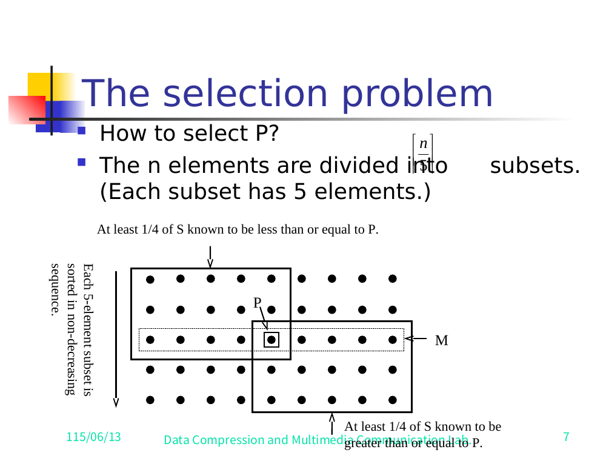
M holds the group medians and P is their median. The upper-left rectangle holds ≥1/4 of S known to be ≤ P; the lower-right rectangle holds ≥1/4 known to be ≥ P.Slide 7 —「How to select P?」每一欄是一組排好序的 5 個元素；虛線列 M 放的是各組 median，P 是它們的 median。左上框裡保證有 ≥1/4 的 S ≤ P；右下框裡保證有 ≥1/4 ≥ P。- Every group whose median is
≤ p: at least 3 of its 5 elements (the median and the two above it in the sorted column) are≤ p. About half the groups have median≤ p. Hence at least aboutn/4elements are≤ p(the upper-left block).凡是 median≤ p的那組：它 5 個裡至少有 3 個（median 加上排序欄裡它上面那兩個）是≤ p的。而大約一半的組 median 都≤ p。所以至少約n/4個元素是≤ p（就是左上那塊）。 - Symmetrically, at least about
n/4elements are≥ p(the lower-right block).對稱地，至少約n/4個元素是≥ p（右下那塊）。
Guarantees:
- At least 1/4 of S is ≤ p.
- At least 1/4 of S is ≥ p.保證：
- 至少 S 的 1/4 是 ≤ p。
- 至少 S 的 1/4 是 ≥ p。
Therefore at least n/4 elements are pruned in each iteration, and at most 3n/4 elements remain for the next iteration.所以每一輪至少砍掉 n/4 個元素，留給下一輪的最多 3n/4 個。
5. The Full Linear-Time Selection Algorithm5. 完整的線性時間 Selection 演算法
Algorithm (5 steps)演算法（5 步）
- Input: a set
Sofnelements.輸入：一個有n個元素的集合S。 - Output: the k-th smallest element of
S.輸出：S裡第 k 小的元素。
- Step 1. Divide
Sinto⌈n/5⌉subsets, each containing five elements. Add dummy elements to the last subset ifnis not a multiple of 5.Step 1. 把S切成⌈n/5⌉組，每組 5 個。如果n不是 5 的倍數，最後一組補 dummy 元素湊齊。 - Step 2. Sort each subset of elements.Step 2. 把每一組各自排序。
- Step 3. Find the element
pwhich is the median of the medians of the⌈n/5⌉subsets.Step 3. 找出p，也就是這⌈n/5⌉組的 median of medians。 - Step 4. Partition
SintoS₁, S₂, S₃(elements less than, equal to, and greater thanp, respectively).Step 4. 用p把S切成S₁, S₂, S₃（分別是比p小、等於、比p大的元素）。 - Step 5. Three-way recursion:
- If
|S₁| ≥ k→ discardS₂, S₃, solve "select k-th smallest fromS₁" next iteration. - Else if|S₁| + |S₂| ≥ k→pis the k-th smallest element ofS. Done. - Otherwise → letk′ = k − |S₁| − |S₂|, solve "select k′-th smallest fromS₃" next iteration.Step 5. 三向遞迴： - 如果|S₁| ≥ k→ 丟掉S₂, S₃，下一輪解「在S₁裡找第 k 小」。 - 否則如果|S₁| + |S₂| ≥ k→p就是第 k 小，結束。 - 不然 → 令k′ = k − |S₁| − |S₂|，下一輪解「在S₃裡找第 k′ 小」。
Key facts (from §4): at least n/4 pruned per iteration, and the remaining problem in step 5 has at most 3n/4 elements.關鍵事實（來自 §4）：每一輪至少砍 n/4，而且 Step 5 留下來的子問題最多 3n/4 個元素。
Per-step cost每一步的成本
| Step步驟 | Work做的事 | Cost成本 |
|---|---|---|
| Step 1 | Divide into groups of 5切成每組 5 個 | O(n) |
| Step 2 | Sort each group (each is constant size 5)把每組排序（每組固定就 5 個） | O(n) |
| Step 3 | Recursively find median of ⌈n/5⌉ medians遞迴找 ⌈n/5⌉ 個 median 的 median |
T(n/5) |
| Step 4 | Partition S around p用 p 把 S 切開 |
O(n) |
| Step 5 | Recurse on ≤ 3n/4 survivors對剩下的 ≤ 3n/4 個遞迴 |
T(3n/4) |
Recurrence遞迴式
T(n) = T(3n/4) + T(n/5) + O(n)
Note the two recursive calls: one of size n/5 (finding the pivot in step 3) and one of size 3n/4 (the surviving subproblem in step 5). Because 3/4 + 1/5 = 19/20 < 1, the recurrence still solves to O(n).注意這裡有兩個遞迴呼叫：一個大小 n/5（Step 3 找 pivot），一個大小 3n/4（Step 5 活下來的子問題）。因為 3/4 + 1/5 = 19/20 < 1，這條遞迴式照樣解出 O(n)。
Proof that T(n) = O(n) — polynomial substitution證明 T(n) = O(n) — 多項式代入法
Assume T(n) can be written as a polynomial:假設 T(n) 可以寫成一個多項式：
T(n) = a₀ + a₁n + a₂n² + … (a₁ ≠ 0)
T(3n/4) = a₀ + (3/4)a₁n + (9/16)a₂n² + …
T(n/5) = a₀ + (1/5)a₁n + (1/25)a₂n² + …
Adding the two recursive terms and comparing with T(19n/20):把這兩個遞迴項加起來，跟 T(19n/20) 比一比：
T(19n/20) = a₀ + (19/20)a₁n + (361/400)a₂n² + …
Coefficient comparison (the linear and higher coefficients of T(3n/4) + T(n/5) vs T(19n/20)):比對係數（拿 T(3n/4) + T(n/5) 的一次項跟更高次項，去比 T(19n/20)）：
- Linear term:
(3/4 + 1/5)a₁n = (19/20)a₁n— matchesT(19n/20)'s linear term.一次項：(3/4 + 1/5)a₁n = (19/20)a₁n——剛好跟T(19n/20)的一次項一樣。 - Quadratic term:
(9/16 + 1/25)a₂n²vs(361/400)a₂n². Now9/16 + 1/25 = 225/400 + 16/400 = 241/400 < 361/400. So the sum's quadratic part is smaller.二次項：(9/16 + 1/25)a₂n²對上(361/400)a₂n²。算一下9/16 + 1/25 = 225/400 + 16/400 = 241/400 < 361/400，所以左邊那個總和的二次項比較小。
Hence, accounting for the extra constant a₀:於是，把多出來的常數 a₀ 也算進去：
T(3n/4) + T(n/5) ≤ a₀ + T(19n/20)
⚠️ Reconstructed detail: the slide states
T(3n/4) + T(n/5) ≤ a₀ + T(19n/20)directly. The coefficient comparison9/16 + 1/25 = 241/400 < 361/400(and similarly for higher terms) is the justification I filled in for why the inequality holds.⚠️ 補上去的細節：投影片直接寫T(3n/4) + T(n/5) ≤ a₀ + T(19n/20)。那個係數比對9/16 + 1/25 = 241/400 < 361/400（更高次項同理）是我幫忙補上的，用來說明這個不等式為什麼成立。
Substituting into the recurrence (with the O(n) term written as cn):代回遞迴式（把 O(n) 那一項寫成 cn）：
T(n) ≤ cn + T(19n/20)
Unrolling this single-term recurrence:把這條單項遞迴式展開：
T(n) ≤ cn + (19/20)cn + T((19/20)²·n)
≤ cn + (19/20)cn + (19/20)²cn + … + (19/20)ᵖ·cn + T((19/20)ᵖ⁺¹·n)
where p is chosen so the surviving size is constant: (19/20)ᵖ⁺¹·n ≤ 1 ≤ (19/20)ᵖ·n.這裡 p 取到剩下的大小是常數為止：(19/20)ᵖ⁺¹·n ≤ 1 ≤ (19/20)ᵖ·n。
The geometric series with ratio 19/20:公比 19/20 的等比級數：
cn · ( 1 + 19/20 + (19/20)² + … ) = cn · 1/(1 − 19/20) = cn · 20 = 20cn
So, adding the constant base-case cost b:所以，再把 base case 的常數成本 b 加上去：
T(n) ≤ 20cn + b = O(n)
cn log n vs對上 20cn
The naive sort-based selection costs cn log n. The prune-and-search version costs 20cn. The crossover: 20cn < cn log n exactly when log n > 20, i.e. n > 2²⁰ ≈ 10⁶. The point is asymptotically 20cn = O(n) beats O(n log n): the constant 20 is fixed while log n grows without bound.用排序的笨方法做 selection 要 cn log n，prune-and-search 版本要 20cn。交叉點在哪？20cn < cn log n 剛好發生在 log n > 20 的時候，也就是 n > 2²⁰ ≈ 10⁶。重點是漸近上 20cn = O(n) 還是贏 O(n log n)：那個常數 20 是固定的，可是 log n 會無止盡長大。
6. Linear Programming with Two Variables6. 兩個變數的 Linear Programming
General problem一般問題
Minimize a·x + b·y
subject to aᵢ·x + bᵢ·y ≤ cᵢ , i = 1, 2, …, n
Simplified problem簡化版問題
A canonical, easier-to-visualize version (we will reduce the general one to this later):一個標準、比較好畫圖想像的版本（之後我們會把一般問題化簡成這個）：
Minimize y
subject to y ≥ aᵢ·x + bᵢ , i = 1, 2, …, n
Each constraint y ≥ aᵢx + bᵢ says the feasible point must lie on or above the line aᵢx + bᵢ.每一條限制式 y ≥ aᵢx + bᵢ 的意思就是：可行的點必須落在直線 aᵢx + bᵢ 上面或它本身。
The boundary function F(x)邊界函數 F(x)
The lower boundary of the feasible region is the upper envelope of all the lines:可行區域的下邊界，就是所有直線的 upper envelope（上包絡線）：
F(x) = max { aᵢ·x + bᵢ : i = 1, 2, …, n }
F(x) is a convex, piecewise-linear function (the pointwise maximum of linear functions). ✅ Verified against slide 14 (Fig. 7-2). The slide explicitly prints the formula F(x) = max_{1≤i≤n} {aᵢx + bᵢ} (printed as 1≤x≤n on the slide — an obvious typo for 1≤i≤n). The figure shows a gray convex feasible region above the upper envelope of eight constraint lines a₁x+b₁ … a₈x+b₈, with the optimum (x₀, y₀) at the lowest boundary point (marked by a red vertical segment). Earlier carved render (Figure A.1) showed the same kind of plot with five labelled lines; slide 14 is the authoritative version. So the F(x) body is not blank on the slide.F(x) 是一個 convex（凸的）、分段線性的函數（一堆線性函數逐點取 max）。✅ 已對照 slide 14（Fig. 7-2）確認。投影片明白印出公式 F(x) = max_{1≤i≤n} {aᵢx + bᵢ}（投影片上印成 1≤x≤n——明顯是把 1≤i≤n 打錯）。圖裡是一塊灰色的凸可行區域，蓋在八條限制線 a₁x+b₁ … a₈x+b₈ 的 upper envelope 上面，最佳解 (x₀, y₀) 在邊界的最低點（用一條紅色短直線標出來）。先前那張碎出來的圖（Figure A.1）畫的是同類型、只標了五條線；slide 14 才是正規版。所以 F(x) 的內容在投影片上並不是空白。

F(x) = max{aᵢx+bᵢ} of eight constraint lines, with the optimum (x₀, y₀) at the lowest boundary point (red segment).Slide 14（Fig. 7-2）—八條限制線的 upper envelope F(x) = max{aᵢx+bᵢ}，最佳解 (x₀, y₀) 在邊界最低點（紅色線段）。The optimum最佳解
The optimum x₀ minimizes the boundary:最佳解 x₀ 讓邊界值最小：
F(x₀) = min over x of F(x)
(x₀, y₀) with y₀ = F(x₀) is the optimal solution — the lowest point of the convex envelope. ✅ Verified against slide 14 (Fig. 7-2), which prints the optimum as F(x₀) = min_{-∞<x<∞} F(x) and marks (x₀, y₀) at the bottom of the convex envelope. (The carved Figure A.1 with five labelled lines depicts the closely-related Fig. 7-3 pruning picture, case x₀ < xₘ.)(x₀, y₀)（其中 y₀ = F(x₀)）就是最佳解——凸 envelope 的最低點。✅ 已對照 slide 14（Fig. 7-2）確認，它把最佳解印成 F(x₀) = min_{-∞<x<∞} F(x)，並在凸 envelope 底部標出 (x₀, y₀)。（那張碎出來、標了五條線的 Figure A.1，畫的其實是很接近的 Fig. 7-3 修剪圖，x₀ < xₘ 的情形。）
Deciding which side x₀ is on, given a test point xₘ給定一個測試點 xₘ，判斷 x₀ 在哪一邊
Suppose a test abscissa xₘ is known. How do we know whether x₀ < xₘ or x₀ > xₘ? Evaluate yₘ = F(xₘ).假設我們手上有一個測試橫座標 xₘ。怎麼知道是 x₀ < xₘ 還是 x₀ > xₘ？算一下 yₘ = F(xₘ) 就行。
Case 1: yₘ lies on only one constraint. Let g be the slope of that constraint.
- If g > 0 → x₀ < xₘ (envelope still descending to the left).
- If g < 0 → x₀ > xₘ (envelope still descending to the right).情形 1：yₘ 只落在一條限制式上。令 g 是那條限制式的斜率。
- 如果 g > 0 → x₀ < xₘ（envelope 往左還在下降）。
- 如果 g < 0 → x₀ > xₘ（envelope 往右還在下降）。
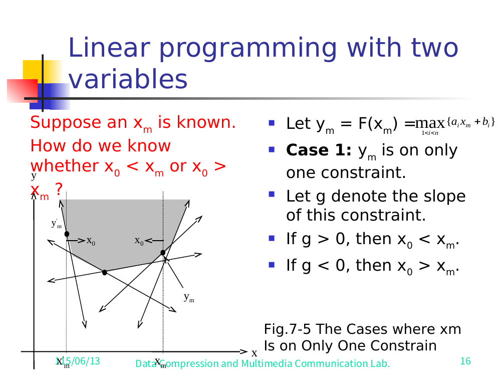
0 giving x0<xm and g<0 giving x0>xm">xₘ is on only one constraint of slope g.Slide 16（Fig. 7-5）—xₘ 只落在一條斜率為 g 的限制式上的情形。Case 2: yₘ is the intersection of several constraints. ✅ Verified against slide 17 (Fig. 7-6). The slide prints the slope definitions explicitly:情形 2：yₘ 是好幾條限制式的交點。✅ 已對照 slide 17（Fig. 7-6）確認。投影片明白印出這幾個斜率的定義：
g_max = max_{1≤i≤n} { aᵢ : aᵢxₘ + bᵢ = F(xₘ) } (max slope of constraints achieving F(xₘ))
g_min = min_{1≤i≤n} { aᵢ : aᵢxₘ + bᵢ = F(xₘ) } (min slope of constraints achieving F(xₘ))
- Case 2a:
g_min > 0andg_max > 0→x₀ < xₘ.情形 2a：g_min > 0且g_max > 0→x₀ < xₘ。 - Case 2b:
g_min < 0andg_max < 0→x₀ > xₘ.情形 2b：g_min < 0且g_max < 0→x₀ > xₘ。 - Case 2c:
g_min < 0andg_max > 0→(xₘ, yₘ)is the optimum solution (envelope has its minimum exactly here).情形 2c：g_min < 0且g_max > 0→(xₘ, yₘ)就是最佳解（envelope 的最小值剛好在這裡）。
The Fig. 7-6 plot draws a convex envelope with three test abscissae on the x-axis: the slide maps Case 2a → xₘ,₃, Case 2b → xₘ,₁, Case 2c → xₘ,₂ (with the g_min/g_max slope labels on the active lines at each intersection). The single-constraint Case 1 is the separate Fig. 7-5 (slide 16).Fig. 7-6 那張圖畫了一條凸 envelope，x 軸上有三個測試橫座標：投影片把 情形 2a → xₘ,₃、情形 2b → xₘ,₁、情形 2c → xₘ,₂ 一一對應（每個交點上 active 的線都標了 g_min/g_max）。只落單一條限制式的情形 1，是另外那張 Fig. 7-5（slide 16）。
<img class="figure" src="../render/A06full/slide-17.png" alt="Fig. 7-6: convex envelope with three test abscissae xm,1 < xm,2 < xm,3, gmin/gmax slope labels on active lines, and the 2a/2b/2c rules mapped to xm,3 / xm,1 / xm,2">
xₘ on the intersection of several constraints. Case 2a (xₘ,₃) ⇒ x₀<xₘ; Case 2b (xₘ,₁) ⇒ x₀>xₘ; Case 2c (xₘ,₂) ⇒ optimum.Slide 17（Fig. 7-6）—xₘ 落在好幾條限制式的交點上。情形 2a（xₘ,₃）⇒ x₀<xₘ；情形 2b（xₘ,₁）⇒ x₀>xₘ；情形 2c（xₘ,₂）⇒ 最佳解。Pruning constraints修剪限制式
Once we know x₀'s side relative to xₘ, we can delete constraints (Fig. 7-3):一旦知道 x₀ 相對 xₘ 在哪一邊，我們就能砍掉一些限制式（Fig. 7-3）：
If
x₀ < xₘand the intersection ofa₃x + b₃anda₂x + b₂is greater thanxₘ, then for allx < xₘone of these two constraints is always smaller than the other. The always-smaller constraint cannot contribute to the upper envelope near the optimum, so it can be deleted. (Symmetric reasoning forx₀ > xₘ.)如果x₀ < xₘ，而且a₃x + b₃跟a₂x + b₂的交點大於xₘ，那麼對所有x < xₘ，這兩條限制式裡總有一條永遠比另一條小。那條永遠比較小的限制式，在最佳解附近不可能跑到 upper envelope 上，所以可以砍掉。（x₀ > xₘ的情形對稱地推一遍。）
<img class="figure" src="../render/A06full/slide-15.png" alt="Fig. 7-3: convex envelope with dashed vertical at xm, x0 to its left (case x0
x₀ < xₘ, the line annotated "May be deleted" never reaches the envelope for x < xₘ.Slide 15（Fig. 7-3）—可以被刪掉的限制式。在 x₀ < xₘ 的情況下，標著「May be deleted」的那條線，在 x < xₘ 的範圍裡永遠碰不到 envelope。Choosing xₘ (so that a constant fraction is pruned)怎麼挑 xₘ（好讓固定比例被砍掉）
Arbitrarily group the
nconstraints inton/2pairs. For each pair, find their intersection. Among thesen/2intersection x-coordinates, choose the median asxₘ.隨便把這n條限制式湊成n/2對。每一對算出它們的交點，然後在這n/2個交點 x 座標裡，挑 median 當作xₘ。
This guarantees that for half the pairs the intersection lies on the "deletable" side, so n/4 constraints are pruned per iteration.這樣就能保證：有一半的對，它們的交點會落在「可砍」的那一側，所以每一輪砍掉 n/4 條限制式。
Algorithm (simplified two-variable LP)演算法（簡化版 two-variable LP）
- Input: constraints
S:aⱼx + bⱼ,j = 1, …, n.輸入：限制式S：aⱼx + bⱼ，j = 1, …, n。 - Output: the value
x₀minimizingysubject toy ≥ aⱼx + bⱼfor allj.輸出：在所有j都滿足y ≥ aⱼx + bⱼ的前提下，讓y最小的那個x₀。
- Step 1. If
Shas ≤ 2 constraints, solve by brute force.Step 1. 如果S只剩 ≤ 2 條限制式，直接暴力解。 - Step 2. Divide
Sinton/2pairs. For each pair(aᵢx+bᵢ, aⱼx+bⱼ), find their intersectionpᵢⱼwith x-valuexᵢⱼ.Step 2. 把S分成n/2對。每一對(aᵢx+bᵢ, aⱼx+bⱼ)算出交點pᵢⱼ，它的 x 值是xᵢⱼ。 - Step 3. Among the
xᵢⱼ's (at mostn/2of them), find the medianxₘ.Step 3. 在這些xᵢⱼ（最多n/2個）裡找 medianxₘ。 - Step 4. Determine
yₘ = F(xₘ),g_min, andg_max.Step 4. 算出yₘ = F(xₘ)、g_min跟g_max。 - Step 5.
- 5a. If
g_minandg_maxare not of the same sign →yₘis the solution. Exit. - 5b. Otherwise:x₀ < xₘifg_min > 0;x₀ > xₘifg_min < 0.Step 5. - 5a. 如果g_min跟g_max號不同號 →yₘ就是解，結束。 - 5b. 否則：g_min > 0時x₀ < xₘ；g_min < 0時x₀ > xₘ。 - Step 6. Prune:
- 6a. If
x₀ < xₘ: for each pair whose intersection x-coordinate is larger thanxₘ, prune the constraint that is always smaller forx ≤ xₘ. - 6b. Ifx₀ > xₘ: for each pair whose intersection x-coordinate is less thanxₘ, prune the constraint that is always smaller forx ≥ xₘ.Step 6. 修剪： - 6a. 如果x₀ < xₘ：對每一對交點 x 座標大於xₘ的，砍掉在x ≤ xₘ時永遠比較小的那條。 - 6b. 如果x₀ > xₘ：對每一對交點 x 座標小於xₘ的，砍掉在x ≥ xₘ時永遠比較小的那條。
Let S be the remaining constraints. Go to Step 2.把剩下的限制式當成新的 S，回到 Step 2。
Pruning rate: there are n/2 intersections, so n/4 constraints pruned per iteration.
Time complexity: O(n). The slide states only "O(n)"; by the same prune-and-search argument each iteration does O(n) work and prunes a constant fraction (≈1/4 of constraints), giving T(n) = T(3n/4) + O(n) = O(n).修剪速率：總共有 n/2 個交點，所以每一輪砍掉 n/4 條限制式。
時間複雜度：O(n)。投影片只寫「O(n)」；用同一套 prune-and-search 論證：每一輪做 O(n) 的工、砍掉固定比例（約 1/4 的限制式），就得到 T(n) = T(3n/4) + O(n) = O(n)。
Reducing the general problem to the simplified one把一般問題化簡成簡化版
The general two-variable LP Minimize ax + by s.t. aᵢx + bᵢy ≤ cᵢ is transformed by the substitution:一般的 two-variable LP Minimize ax + by s.t. aᵢx + bᵢy ≤ cᵢ，用下面這個代換轉一下：
x′ = x
y′ = ax + by
giving就得到
Minimize y′
subject to aᵢ′·x′ + bᵢ′·y′ ≤ cᵢ′ , i = 1, …, n
where aᵢ′ = aᵢ − bᵢ·a/b , bᵢ′ = bᵢ/b , cᵢ′ = cᵢ
Rewriting (changing symbols), the general problem splits the constraints into two index sets I₁ and I₂ (constraints whose y-coefficient sign differs become "y ≥" or "y ≤" constraints):換個符號重寫一下，一般問題會把限制式分成兩個 index 集合 I₁ 跟 I₂（y 係數正負號不同的限制式，分別變成「y ≥」或「y ≤」型）：
Minimize y
subject to y ≥ aᵢx + bᵢ (i ∈ I₁)
y ≤ aᵢx + bᵢ (i ∈ I₂)
a ≤ x ≤ b
Define:定義：
F₁(x) = max { aᵢx + bᵢ : i ∈ I₁ } (lower envelope constraint — must lie above)
F₂(x) = min { aᵢx + bᵢ : i ∈ I₂ } (upper envelope constraint — must lie below)
Then the problem becomes:於是問題變成：
Minimize F₁(x)
subject to F₁(x) ≤ F₂(x), a ≤ x ≤ b
(Fig. 7-9: feasible where F₁(x) ≤ F₂(x), between x = a and x = b.)（Fig. 7-9：在 x = a 到 x = b 之間、F₁(x) ≤ F₂(x) 的地方就是可行區。）
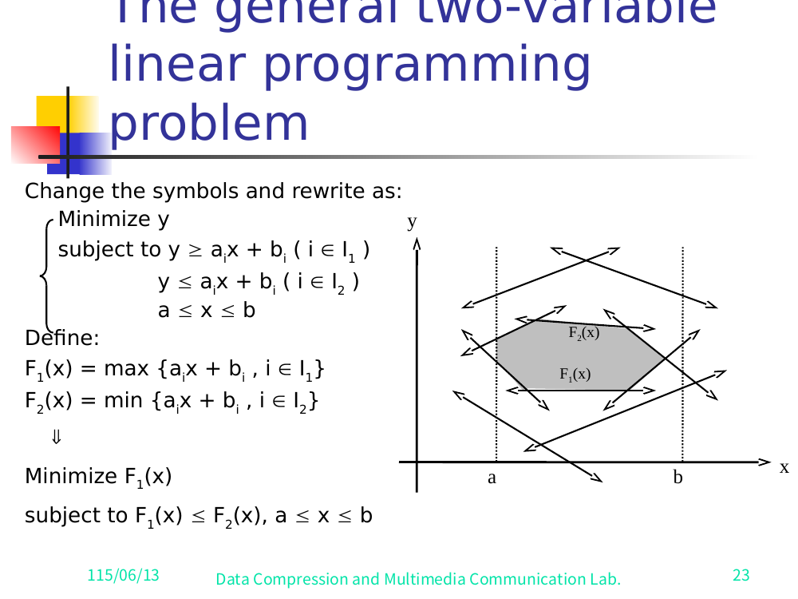
F₁(x)=max{aᵢx+bᵢ : i∈I₁} and F₂(x)=min{aᵢx+bᵢ : i∈I₂}; feasible region is the shaded lens where F₁(x) ≤ F₂(x).Slide 23 — 把一般問題改寫成 F₁(x)=max{aᵢx+bᵢ : i∈I₁} 跟 F₂(x)=min{aᵢx+bᵢ : i∈I₂}；可行區就是 F₁(x) ≤ F₂(x) 那塊陰影透鏡形。Pruning and feasibility test for the general problem一般問題的修剪與可行性測試
Define F(x) = F₁(x) − F₂(x). Then xₘ is feasible ⟺ F(xₘ) ≤ 0.定義 F(x) = F₁(x) − F₂(x)。那麼 xₘ 可行 ⟺ F(xₘ) ≤ 0。
Slopes at xₘ:xₘ 處的斜率：
g_min = min { aᵢ : i ∈ I₁, aᵢxₘ + bᵢ = F₁(xₘ) } (min slope of active I₁ lines)
g_max = max { aᵢ : i ∈ I₁, aᵢxₘ + bᵢ = F₁(xₘ) } (max slope of active I₁ lines)
h_min = min { aᵢ : i ∈ I₂, aᵢxₘ + bᵢ = F₂(xₘ) } (min slope of active I₂ lines)
h_max = max { aᵢ : i ∈ I₂, aᵢxₘ + bᵢ = F₂(xₘ) } (max slope of active I₂ lines)
⚠️ Note: the slide lists
hmin = …twice (once for min, once for max) — clearly a typo; the second should beh_max. Corrected above.⚠️ 注意：投影片把hmin = …列了兩次（一次當 min、一次當 max）——明顯打錯，第二個應該是h_max。上面已經改正。
<img class="figure" src="../render/A06full/slide-24.png" alt="Fig. 7-9: shaded convex feasible region with dashed verticals at x0 and xm (x0
F(x)=F₁(x)−F₂(x), xₘ feasible ⟺ F(xₘ)≤0. The slope definitions appear at right (the second hmin is the slide's typo for h_max).Slide 24（Fig. 7-9）—一般問題的限制式修剪；F(x)=F₁(x)−F₂(x)，xₘ 可行 ⟺ F(xₘ)≤0。斜率定義列在右邊（第二個 hmin 是投影片把 h_max 打錯）。Case 1: F(xₘ) ≤ 0 (xₘ feasible).
- g_min > 0 and g_max > 0 → x₀ < xₘ.
- g_min < 0 and g_max < 0 → x₀ > xₘ.
- g_min < 0 and g_max > 0 → xₘ = x₀ is the optimum.情形 1：F(xₘ) ≤ 0（xₘ 可行）。
- g_min > 0 且 g_max > 0 → x₀ < xₘ。
- g_min < 0 且 g_max < 0 → x₀ > xₘ。
- g_min < 0 且 g_max > 0 → xₘ = x₀ 就是最佳解。
Case 2: F(xₘ) > 0 (xₘ infeasible).
- g_min > h_max → x₀ < xₘ.
- g_min < h_max → x₀ > xₘ.
- g_min ≤ h_max and g_max ≥ h_min → no feasible solution exists.情形 2：F(xₘ) > 0（xₘ 不可行）。
- g_min > h_max → x₀ < xₘ。
- g_min < h_max → x₀ > xₘ。
- g_min ≤ h_max 且 g_max ≥ h_min → 無可行解。
Algorithm (general two-variable LP)演算法（一般版 two-variable LP）
- Input:
I₁:y ≥ aᵢx + bᵢ,i = 1…n₁;I₂:y ≤ aᵢx + bᵢ,i = n₁+1…n;a ≤ x ≤ b.輸入：I₁：y ≥ aᵢx + bᵢ，i = 1…n₁；I₂：y ≤ aᵢx + bᵢ，i = n₁+1…n；a ≤ x ≤ b。 - Output:
x₀minimizingysubject to all constraints.輸出：在所有限制式下讓y最小的x₀。
- Step 1. Arrange the constraints in
I₁andI₂into arbitrary disjoint pairs (within each set). For each pair: ifaᵢx + bᵢis parallel toaⱼx + bⱼ, deleteaᵢx + bᵢifbᵢ < bⱼfori,j ∈ I₁(or ifbᵢ > bⱼfori,j ∈ I₂). Otherwise find the intersectionpᵢⱼwith x-coordinatexᵢⱼ.Step 1. 把I₁跟I₂裡的限制式各自隨便湊成不重疊的對（同一集合內配對）。每一對：如果aᵢx + bᵢ跟aⱼx + bⱼ平行，那麼在i,j ∈ I₁時，bᵢ < bⱼ就刪掉aᵢx + bᵢ（在i,j ∈ I₂時則是bᵢ > bⱼ才刪）。不平行的話，就算出交點pᵢⱼ，其 x 座標為xᵢⱼ。 - Step 2. Find the median
xₘof thexᵢⱼ's (at mostn/2of them).Step 2. 找這些xᵢⱼ（最多n/2個）的 medianxₘ。 - Step 3.
- If
xₘis optimal → report and exit. - If no feasible solution exists → report and exit. - Otherwise → determine whetherx₀lies to the left or right ofxₘ.Step 3. - 如果xₘ就是最佳解 → 回報並結束。 - 如果無可行解 → 回報並結束。 - 不然 → 判斷x₀是在xₘ的左邊還是右邊。 - Step 4. Discard at least 1/4 of the constraints. Go to Step 1.Step 4. 砍掉至少 1/4 的限制式，回到 Step 1。
Time complexity: O(n).時間複雜度：O(n)。
7. The 1-Center Problem (Smallest Enclosing Circle)7. 1-Center Problem（最小包覆圓）
Definition定義
Given n planar points, find the smallest circle that covers (encloses) all n points. (Fig. 7-16.)給平面上 n 個點，找出能把全部 n 個點都罩住（包進去）的最小圓。（Fig. 7-16。）
The center of the optimum circle lies in a region bounded by perpendicular bisectors: L₁₂ = bisector of the segment joining p₁, p₂; L₃₄ = bisector of segment joining p₃, p₄; etc. A point such as p₁ can be eliminated without affecting the solution if it is dominated. ✅ Verified against slide 34 (= Figure A.3): two bisectors L₁₂ (positive slope) and L₃₄ (negative slope) cross at origin p; points p₁, p₂ on the right, p₃, p₄ in the upper-left inside the shaded admissible region (upper-left quadrant). Slide 34's red caption reads "The area where the center of the optimum circle may be located." (The same figure is reused on slide 50 for Step 10.)最佳圓的圓心，落在一塊由垂直平分線圍出來的區域裡：L₁₂ = 連 p₁, p₂ 那段的平分線；L₃₄ = 連 p₃, p₄ 那段的平分線；以此類推。像 p₁ 這種被支配掉的點，可以直接刪掉，不影響答案。✅ 已對照 slide 34 確認（= Figure A.3）：兩條平分線 L₁₂（正斜率）跟 L₃₄（負斜率）在原點 p 交會；p₁, p₂ 在右邊，p₃, p₄ 在左上、落在陰影的可行區域裡（左上象限）。Slide 34 的紅字標題寫「The area where the center of the optimum circle may be located.」（同一張圖在 slide 50 的 Step 10 又被用了一次。）
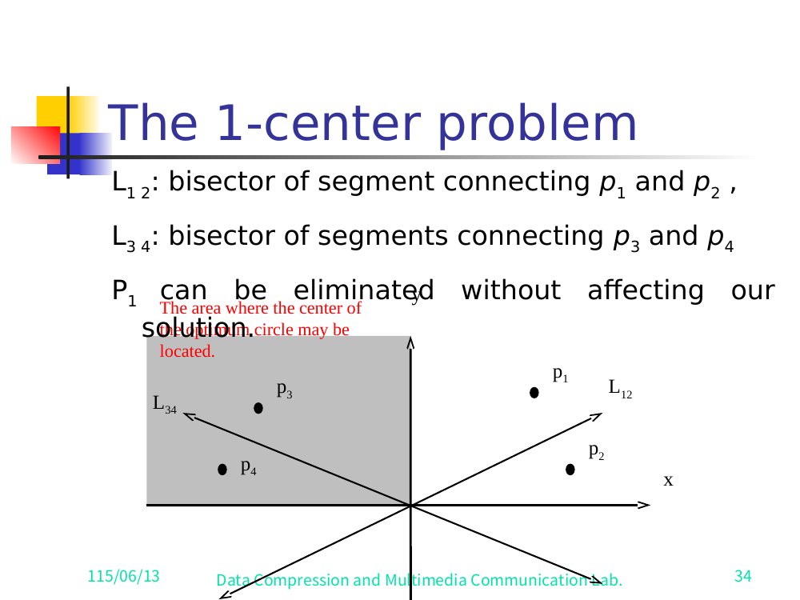
L₁₂ and L₃₄ bound the shaded region "where the center of the optimum circle may be located"; p₁ can be eliminated.Slide 34 — 用垂直平分線做刪點。L₁₂ 跟 L₃₄ 圍出陰影區「最佳圓心可能落在的地方」；p₁ 可以刪掉。7.1 The Constrained 1-Center Problem7.1 受限的 1-Center Problem
The center is restricted to lie on a given straight line y = y′.圓心被限制必須落在一條給定的直線 y = y′ 上。
- Input:
npoints and a straight liney = y′.輸入：n個點，加一條直線y = y′。 - Output: the constrained center
x*on the liney = y′.輸出：線y = y′上的受限圓心x*。
✅ Illustrated by Figure A.2 (carved image) and confirmed by slide 35 (statement "The center is restricted to lying on a straight line") and slide 38 / Fig. 7-18 (the pruning geometry on y = 0).✅ 由 Figure A.2（碎出來的圖）示意，並由 slide 35（寫著「The center is restricted to lying on a straight line」）和 slide 38 / Fig. 7-18（y = 0 上的修剪幾何）佐證。
Algorithm:演算法：
- Step 1. If
n ≤ 2, solve by brute force.Step 1. 如果n ≤ 2，直接暴力解。 - Step 2. Form disjoint pairs
(p₁,p₂), (p₃,p₄), …, (pₙ₋₁,pₙ). If there is an odd number of points, let the final pair be(pₙ, p₁).Step 2. 配成不重疊的對(p₁,p₂), (p₃,p₄), …, (pₙ₋₁,pₙ)。如果點數是奇數，最後一對就湊(pₙ, p₁)。 - Step 3. For each pair
(pᵢ, pᵢ₊₁), find the pointxᵢ,ᵢ₊₁on the liney = y′equidistant from both:d(pᵢ, xᵢ,ᵢ₊₁) = d(pᵢ₊₁, xᵢ,ᵢ₊₁).Step 3. 對每一對(pᵢ, pᵢ₊₁)，在線y = y′上找一個到兩點等距的點xᵢ,ᵢ₊₁：d(pᵢ, xᵢ,ᵢ₊₁) = d(pᵢ₊₁, xᵢ,ᵢ₊₁)。 - Step 4. Find the median of the
n/2valuesxᵢ,ᵢ₊₁. Denote itxₘ.Step 4. 找這n/2個xᵢ,ᵢ₊₁的 median，記成xₘ。 - Step 5. Compute the distance from every
pᵢtoxₘ. Letpⱼbe the farthest point. Letxⱼbe the projection ofpⱼontoy = y′. Ifxⱼis to the left (right) ofxₘ, then the optimal solutionx*must be to the left (right) ofxₘ.Step 5. 算每個pᵢ到xₘ的距離。令pⱼ是最遠的那個點，xⱼ是pⱼ投影到y = y′上的位置。如果xⱼ在xₘ的左邊（右邊），那最佳解x*一定也在xₘ的左邊（右邊）。 - Step 6. Prune:
- If
x* < xₘ: for eachxᵢ,ᵢ₊₁ > xₘ, prunepᵢifpᵢis closer toxₘthanpᵢ₊₁, otherwise prunepᵢ₊₁. - Ifx* > xₘ: for eachxᵢ,ᵢ₊₁ < xₘ, prunepᵢifpᵢis closer toxₘthanpᵢ₊₁, otherwise prunepᵢ₊₁.Step 6. 修剪： - 如果x* < xₘ：對每個xᵢ,ᵢ₊₁ > xₘ的對，若pᵢ比pᵢ₊₁更靠近xₘ就砍pᵢ，否則砍pᵢ₊₁。 - 如果x* > xₘ：對每個xᵢ,ᵢ₊₁ < xₘ的對，若pᵢ比pᵢ₊₁更靠近xₘ就砍pᵢ，否則砍pᵢ₊₁。 - Step 7. Go to Step 1.Step 7. 回到 Step 1。
Intuition for pruning: of the two points in a pair, the one closer to xₘ (on the far side from x*) can never be the farthest point determining the radius, so it is discarded. (Fig. 7-18.)修剪的直覺：一對裡的兩個點，那個比較靠近 xₘ（在離 x* 比較遠那一側）的點，永遠不可能變成決定半徑的最遠點，所以丟掉。（Fig. 7-18。）
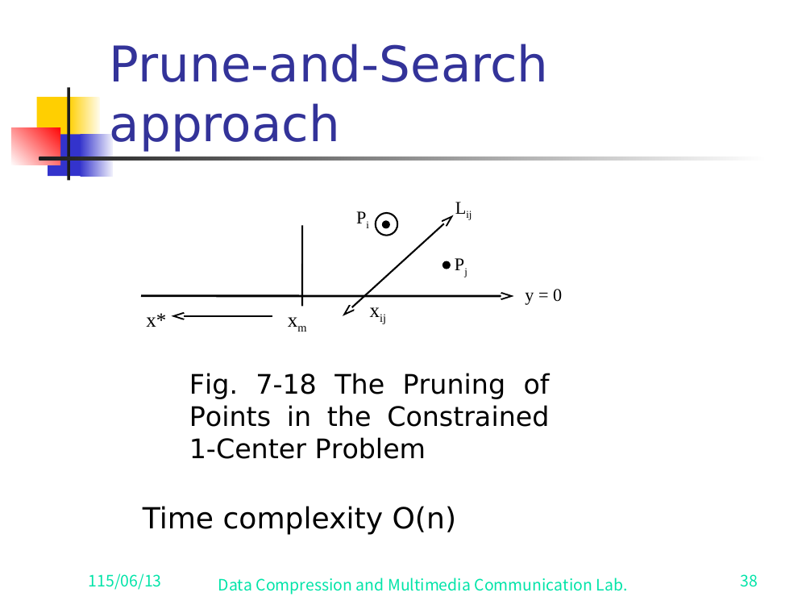
x* to the left of xₘ, of the pair (Pᵢ,Pⱼ) the point closer to xₘ is pruned.Slide 38（Fig. 7-18）—受限 1-center 問題的刪點。當 x* 在 xₘ 左邊時，一對 (Pᵢ,Pⱼ) 裡比較靠近 xₘ 的那個會被砍掉。Time complexity: O(n).時間複雜度：O(n)。
7.2 The General 1-Center Problem7.2 一般的 1-Center Problem
Using the constrained 1-center algorithm we can pin x* to a given line. We can do more: determine the sign of the optimum center's coordinates.用受限版的 1-center 演算法，我們可以把 x* 釘在一條給定的線上。其實還能更進一步：判斷最佳圓心座標的正負號。
Let (xₛ, yₛ) be the center of the optimum (unconstrained) circle. We can determine whether yₛ > 0, yₛ < 0, or yₛ = 0; similarly for xₛ.令 (xₛ, yₛ) 是最佳（不受限）圓的圓心。我們能判斷出 yₛ > 0、yₛ < 0 還是 yₛ = 0；xₛ 同理。
Setup: For the constrained problem on y = 0, let (x*, 0) be the constrained center. Let I be the set of points farthest from (x*, 0).設定：先解線 y = 0 上的受限問題，令 (x*, 0) 是受限圓心。令 I 是離 (x*, 0) 最遠的那些點的集合。
Case 1: I contains one point P = (xₚ, yₚ).
- yₛ has the same sign as yₚ. (We should move the center toward that farthest point.) ✅ Verified against slide 40 (Fig. 7-20, Case 1) = Figure A.4: the constrained circle on y = 0 has its single farthest point p directly above center x* (apex of the half-disk), so the unconstrained optimum moves upward toward p. Slide 40 prints the rule "yₛ has the same sign as that of yₚ."情形 1：I 只有一個點 P = (xₚ, yₚ)。
- yₛ 跟 yₚ 同號。（圓心應該往那個最遠點的方向移。）✅ 已對照 slide 40（Fig. 7-20，情形 1）確認 = Figure A.4：線 y = 0 上的受限圓，它唯一的最遠點 p 就正在圓心 x* 的正上方（半圓盤的頂點），所以不受限的最佳解會往上朝 p 移。Slide 40 印出規則「yₛ has the same sign as that of yₚ.」
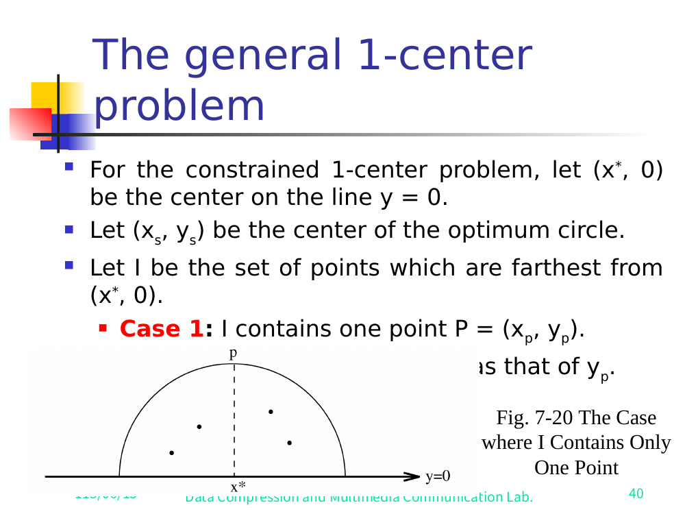
I contains one farthest point p directly above x*, so the unconstrained optimum moves upward: yₛ has the same sign as yₚ.Slide 40（Fig. 7-20，情形 1）—I 只有一個最遠點 p，正在 x* 上方，所以不受限的最佳解往上移：yₛ 跟 yₚ 同號。Case 2: I contains more than one point. ✅ Verified against slide 41 (Fig. 7-20(b)).
- Find the smallest arc spanning all points in I. Let P₁ = (x₁, y₁) and P₂ = (x₂, y₂) be the two endpoints of that smallest spanning arc.
- If the arc ≥ 180° → yₛ = 0 (the circle is already optimal — the farthest points "surround" the center).
- Else (< 180°) → yₛ has the same sign as that of (y₁ + y₂)/2 (this expression IS printed on slide 41 — i.e. the sign of the midpoint-of-arc-endpoints' y-coordinate). Slide 41(b) draws the circle with farthest points P₁,P₃,P₄,P₂ clustered on a short upper-right arc, center (x*,0).情形 2：I 不只一個點。✅ 已對照 slide 41（Fig. 7-20(b)）確認。
- 找出能把 I 裡所有點都包進去的最小弧。令 P₁ = (x₁, y₁) 跟 P₂ = (x₂, y₂) 是這段最小弧的兩個端點。
- 如果這段弧 ≥ 180° → yₛ = 0（圓已經最佳了——最遠點把圓心「圍住」了）。
- 否則（< 180°）→ yₛ 跟 (y₁ + y₂)/2 同號（這個式子真的印在 slide 41 上——也就是弧端點中點的 y 座標的正負號）。Slide 41(b) 畫的圓，最遠點 P₁,P₃,P₄,P₂ 擠在右上一小段弧上，圓心 (x*,0)。
<img class="figure" src="../render/A06full/slide-41.png" alt="Fig. 7-20 Case 2: (a) farthest points P1,P2,P3 spanning an arc ≥180° around center (x*,0) giving ys=0; (b) farthest points P1,P3,P4,P2 clustered on a short upper-right arc <180°, so ys follows the sign of (y1+y2)/2">
I contains several farthest points. Arc ≥180° ⇒ yₛ=0; arc <180° ⇒ yₛ follows the sign of (y₁+y₂)/2.Slide 41（Fig. 7-20(a)/(b)）—I 有好幾個最遠點。弧 ≥180° ⇒ yₛ=0；弧 <180° ⇒ yₛ 跟 (y₁+y₂)/2 同號。Why (acute vs obtuse):
- If the farthest points form an acute triangle with respect to the center → the circle is optimal.
- If they form an obtuse configuration (spanning arc < 180°) → the circle is not optimal; the center can be moved.為什麼（銳角 vs 鈍角）：
- 如果這些最遠點對圓心構成一個銳角三角形 → 這個圓就是最佳的。
- 如果構成鈍角的擺法（包覆弧 < 180°）→ 這個圓還不最佳，圓心還可以再移。
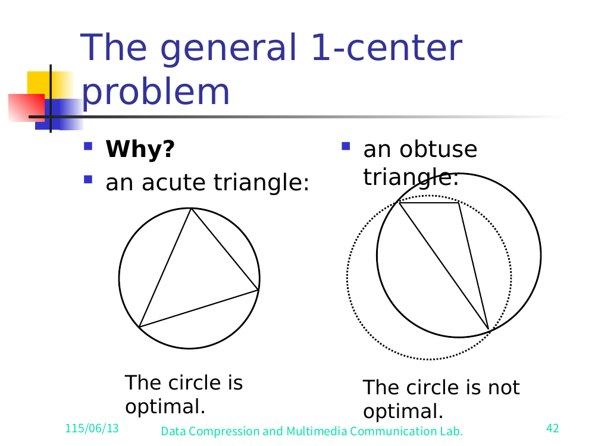
Direction of x* / sign of yₛ when arc < 180°:弧 < 180° 時，x* 的方向 / yₛ 的正負號：
When the smallest spanning arc is < 180° (slide 43, Fig. 7-23), (x₁ − x*) and (x₂ − x*) must be of opposite signs — otherwise we could move x* toward where both P₁ and P₂ lie and shrink the circle.當最小包覆弧 < 180° 時（slide 43，Fig. 7-23），(x₁ − x*) 跟 (x₂ − x*) 一定異號——不然我們就能把 x* 往 P₁ 跟 P₂ 共同所在的方向移，把圓縮小。
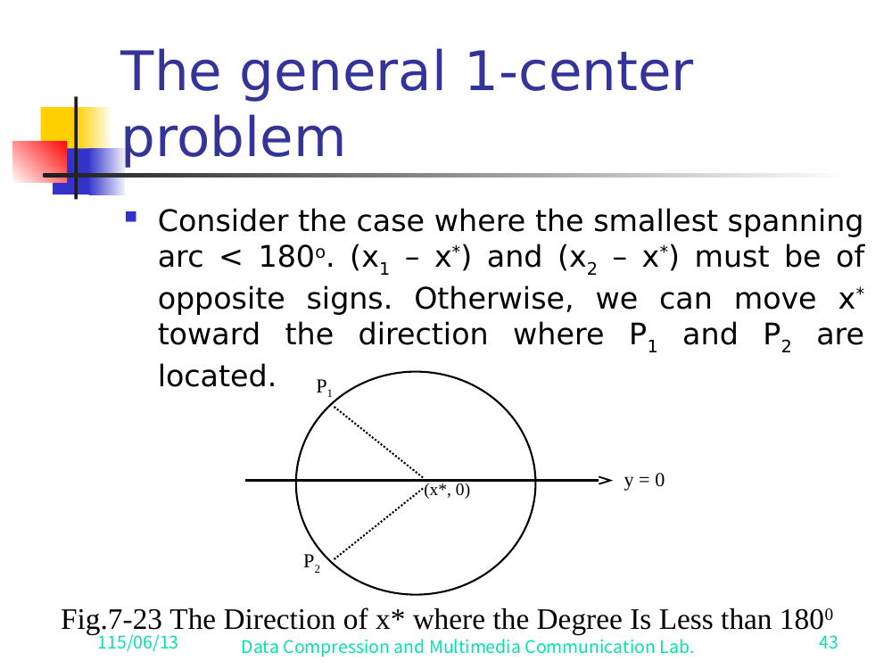
x* when the arc is <180°: (x₁−x*) and (x₂−x*) have opposite signs.Slide 43（Fig. 7-23）—弧 <180° 時 x* 的方向：(x₁−x*) 跟 (x₂−x*) 異號。Let P₁ = (a, b) and P₂ = (c, d). Without loss of generality assume a > x*, b > 0 and c < x*, d < 0 (this WLOG is stated verbatim on slide 44). Let the current radius be r. Slide 44 draws four sub-figures (a)-(d), each shading the candidate region (regions 1, 2, 3, 4) where a smaller enclosing circle's center could lie; the optimum center must lie in region 3 (the shaded region of sub-figure (c), the lower-left wedge between the two equal-radius arcs through P₁ and P₂).令 P₁ = (a, b)、P₂ = (c, d)。不失一般性，假設 a > x*、b > 0 而 c < x*、d < 0（這個 WLOG 在 slide 44 上原封不動寫出來）。令目前半徑為 r。Slide 44 畫了四張子圖 (a)-(d)，各自把更小包覆圓圓心可能落在的候選區域（區域 1、2、3、4）塗陰影；最佳圓心一定落在區域 3（子圖 (c) 的陰影，也就是穿過 P₁ 跟 P₂ 的兩條等半徑弧之間、左下角那塊楔形）。
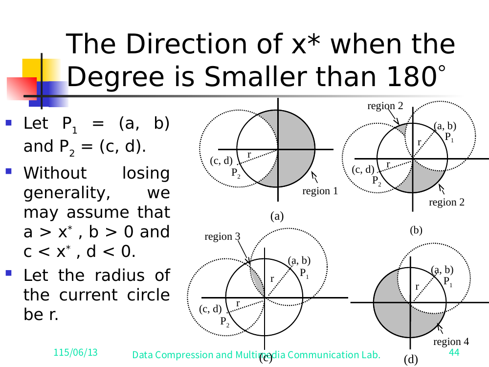
x, b>0, c<x, d<0">✅ Verified against slide 45. The slide does print the closed-form sign expressions (the note's earlier "blank" claim was wrong — the formulas were merely typeset as overlapping fractions). The slide says "the sign of yₛ must be the sign of" and "similarly, xₛ has the same sign as that of", with the fractions:✅ 已對照 slide 45 確認。投影片確實印出了正負號的封閉形式（之前說「空白」是搞錯了——那些公式只是被排版成互相重疊的分數）。投影片寫著「the sign of yₛ must be the sign of」跟「similarly, xₛ has the same sign as that of」，配上這幾個分數：
sign(yₛ) = sign( (b + d)/2 ) = sign( (y₁ + y₂)/2 )
sign(xₛ) = sign( (a + c)/2 ) = sign( (x₁ + x₂)/2 )
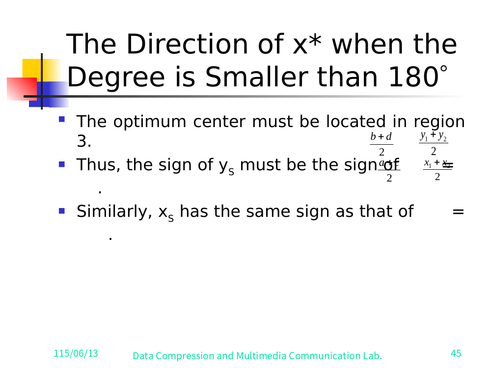
sign(yₛ)=sign((b+d)/2)=sign((y₁+y₂)/2) and sign(xₛ)=sign((a+c)/2)=sign((x₁+x₂)/2), with the optimum center in region 3.Slide 45 — 正負號的封閉形式規則：sign(yₛ)=sign((b+d)/2)=sign((y₁+y₂)/2) 跟 sign(xₛ)=sign((a+c)/2)=sign((x₁+x₂)/2)，最佳圓心落在區域 3。i.e. the optimum center's coordinates take the sign of the midpoint of the two spanning-arc endpoints P₁=(a,b)=(x₁,y₁) and P₂=(c,d)=(x₂,y₂). (Since P₁,P₂ are the arc endpoints, (a,b)≡(x₁,y₁) and (c,d)≡(x₂,y₂), so the two forms of each line are identical.) This is consistent with slide 41's Case-2 statement that yₛ follows the sign of (y₁+y₂)/2.也就是說，最佳圓心的座標，取的是兩個弧端點中點 P₁=(a,b)=(x₁,y₁) 跟 P₂=(c,d)=(x₂,y₂) 的正負號。（因為 P₁,P₂ 就是弧端點，所以 (a,b)≡(x₁,y₁)、(c,d)≡(x₂,y₂)，每一行的兩種寫法其實是同一回事。）這跟 slide 41 情形 2 講的「yₛ 跟 (y₁+y₂)/2 同號」是一致的。
✅ Resolved: the §7.2 sign formulas are present on slides 41 and 45 and are now transcribed above. The slide-45 layout has the two text boxes overlapping the fraction objects, which is why an earlier text dump appeared blank; under the clean per-slide render the fractions
(b+d)/2,(y₁+y₂)/2,(a+c)/2,(x₁+x₂)/2are legible.✅ 已解決：§7.2 的正負號公式確實在 slide 41 跟 45 上，現在已經抄到上面。Slide 45 的排版把兩個文字框疊在分數物件上面，所以先前的文字 dump 才會看起來空白；換成乾淨的逐張 render 之後，分數(b+d)/2、(y₁+y₂)/2、(a+c)/2、(x₁+x₂)/2都看得清楚了。
7.3 The General 1-Center Algorithm (full)7.3 一般的 1-Center 演算法（完整版）
- Input: a set
S = {p₁, …, pₙ}ofnpoints.輸入：一個有n個點的集合S = {p₁, …, pₙ}。 - Output: the smallest enclosing circle for
S.輸出：S的最小包覆圓。
- Step 1. If
Shas ≤ 16 points, solve by brute force.Step 1. 如果S剩 ≤ 16 個點，直接暴力解。 - Step 2. Form disjoint pairs
(p₁,p₂), …, (pₙ₋₁,pₙ). For each pair(pᵢ, pᵢ₊₁)find the perpendicular bisector of segmentpᵢpᵢ₊₁. Denote themLₖ(k = 1,…,n/2) and compute their slopessₖ.Step 2. 配成不重疊的對(p₁,p₂), …, (pₙ₋₁,pₙ)。對每一對(pᵢ, pᵢ₊₁)求pᵢpᵢ₊₁那段的垂直平分線，記成Lₖ（k = 1,…,n/2），並算出它們的斜率sₖ。 - Step 3. Compute the median of the slopes
sₖ; denote itsₘ.Step 3. 算斜率sₖ的 median，記成sₘ。 - Step 4. Rotate the coordinate system so the x-axis coincides with
y = sₘ·x. LetI⁺(I⁻) be the set ofLₖwith positive (negative) slope. (Each has sizen/4.)Step 4. 把座標系旋轉，讓 x 軸對齊y = sₘ·x。令I⁺（I⁻）是斜率為正（負）的那些Lₖ的集合。（各有n/4個。） - Step 5. Construct disjoint pairs
(Lᵢ⁺, Lᵢ⁻),i = 1,…,n/4, withLᵢ⁺ ∈ I⁺,Lᵢ⁻ ∈ I⁻. Find each pair's intersection(aᵢ, bᵢ).Step 5. 配成不重疊的對(Lᵢ⁺, Lᵢ⁻)，i = 1,…,n/4，其中Lᵢ⁺ ∈ I⁺、Lᵢ⁻ ∈ I⁻。求每一對的交點(aᵢ, bᵢ)。 - Step 6. Find the median of the
bᵢ's; denote ity*. Apply the constrained 1-center subroutine toSwith the center forced ontoy = y*. Let its solution be(x′, y*).Step 6. 求這些bᵢ的 median，記成y*。對S跑受限 1-center 副程式，把圓心釘在y = y*上。設它的解是(x′, y*)。 - Step 7. Apply procedure 7.2 with
Sand(x′, y*). Ifyₛ = y*→ report "the circle from step 6 with center(x′, y*)is optimal" and exit. Otherwise record whetheryₛ > y*oryₛ < y*.Step 7. 拿S跟(x′, y*)跑 7.2 的程序。如果yₛ = y*→ 回報「Step 6 圓心(x′, y*)的圓就是最佳」並結束。不然就記下是yₛ > y*還是yₛ < y*。 - Step 8. If
yₛ > y*, find the median of theaᵢ's among(aᵢ,bᵢ)withbᵢ < y*. Ifyₛ < y*, find the median ofaᵢ's among those withbᵢ > y*. Denote the medianx*. Apply the constrained 1-center algorithm forcing the center ontox = x*. Let its solution be(x*, y′).Step 8. 如果yₛ > y*，就在那些bᵢ < y*的(aᵢ,bᵢ)裡找aᵢ的 median；如果yₛ < y*，就在那些bᵢ > y*的裡面找。把這個 median 記成x*。再跑受限 1-center 演算法，把圓心釘在x = x*上。設它的解是(x*, y′)。 - Step 9. Apply procedure 7.2 with
Sand(x*, y′). Ifxₛ = x*→ report "the circle from step 8 with center(x*, y′)is optimal" and exit. Otherwise recordxₛ > x*orxₛ < x*.Step 9. 拿S跟(x*, y′)跑 7.2 的程序。如果xₛ = x*→ 回報「Step 8 圓心(x*, y′)的圓就是最佳」並結束。不然就記下xₛ > x*還是xₛ < x*。 - Step 10. Prune based on the quadrant of the optimum relative to
(x*, y*). In each case(aᵢ, bᵢ)is the intersection ofLᵢ⁺andLᵢ⁻:Step 10. 根據最佳解相對(x*, y*)落在哪個象限來修剪。每個情形裡(aᵢ, bᵢ)都是Lᵢ⁺跟Lᵢ⁻的交點：- Case 1:
xₛ > x*andyₛ > y*. For all(aᵢ,bᵢ)withaᵢ < x*andbᵢ < y*: letLᵢ⁻be the bisector ofpⱼ, pₖ; prune the one ofpⱼ/pₖthat is closer to(x*, y*).情形 1：xₛ > x*且yₛ > y*。對所有aᵢ < x*且bᵢ < y*的(aᵢ,bᵢ)：令Lᵢ⁻是pⱼ, pₖ的平分線，砍掉pⱼ/pₖ裡比較靠近(x*, y*)的那個。 - Case 2:
xₛ < x*andyₛ > y*. For all(aᵢ,bᵢ)withaᵢ > x*andbᵢ < y*: letLᵢ⁺be the bisector ofpⱼ, pₖ; prune the closer one.情形 2：xₛ < x*且yₛ > y*。對所有aᵢ > x*且bᵢ < y*的(aᵢ,bᵢ)：令Lᵢ⁺是pⱼ, pₖ的平分線，砍掉比較近的那個。 - Case 3:
xₛ < x*andyₛ < y*. For all(aᵢ,bᵢ)withaᵢ > x*andbᵢ > y*: letLᵢ⁻be the bisector ofpⱼ, pₖ; prune the closer one.情形 3：xₛ < x*且yₛ < y*。對所有aᵢ > x*且bᵢ > y*的(aᵢ,bᵢ)：令Lᵢ⁻是pⱼ, pₖ的平分線，砍掉比較近的那個。 - Case 4:
xₛ > x*andyₛ < y*. For all(aᵢ,bᵢ)withaᵢ < x*andbᵢ > y*: letLᵢ⁺be the bisector ofpⱼ, pₖ; prune the closer one.情形 4：xₛ > x*且yₛ < y*。對所有aᵢ < x*且bᵢ > y*的(aᵢ,bᵢ)：令Lᵢ⁺是pⱼ, pₖ的平分線，砍掉比較近的那個。
- Case 1:
- Step 11. Let
Sbe the remaining points. Go to Step 1.Step 11. 把剩下的點當成新的S，回到 Step 1。
Pruning rate: ✅ Verified against slide 52 ("One point for each of n/4 intersections of Lᵢ⁺ and Lᵢ⁻ is pruned away. Thus, n/16 points are pruned away in each iteration."). Only the intersections in the correct quadrant (relative to (x*, y*)) qualify, giving n/16 points pruned per iteration. Slide 52's figure shows the four quadrants about (xₘ, yₘ) with the prunable quadrant shaded and bisector-pair crosses scattered in each.修剪速率：✅ 已對照 slide 52 確認（「One point for each of n/4 intersections of Lᵢ⁺ and Lᵢ⁻ is pruned away. Thus, n/16 points are pruned away in each iteration.」）。只有落在正確象限（相對 (x*, y*)）的交點才算數，所以每一輪砍掉 n/16 個點。Slide 52 的圖畫出繞著 (xₘ, yₘ) 的四個象限，可砍的那個象限塗了陰影，每個象限裡散著一些平分線對的交點記號。
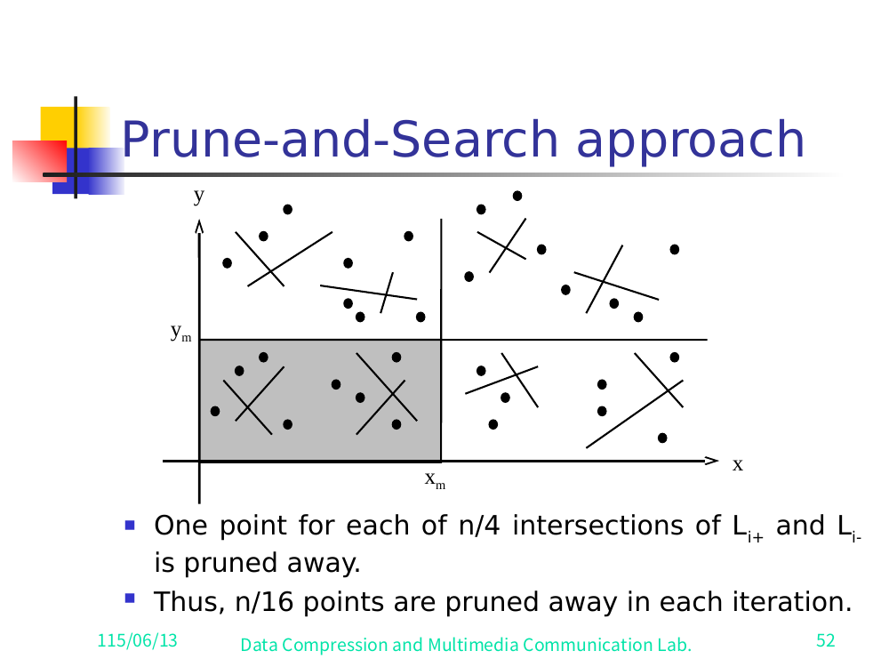
(xₘ,yₘ) qualify; one point is pruned per qualifying intersection, giving n/16 pruned per iteration.Slide 52 — 一般 1-center 步驟的修剪。只有落在相對 (xₘ,yₘ) 正確象限的交點才算數；每個符合的交點砍掉一個點，所以每輪砍 n/16 個。Time complexity:時間複雜度：
T(n) = T(15n/16) + O(n) = O(n)
(Since 15/16 < 1 and per-iteration work is O(n), the geometric series sums to O(n) — same general-method argument as §1.)（因為 15/16 < 1，而且每一輪做 O(n) 的工，等比級數加起來就是 O(n)——跟 §1 的通用方法同一套論證。）
Verification status (after reading the full 53-slide render render/A06full/)驗證狀態（讀完整份 53 張投影片 render render/A06full/ 之後）
✅ Resolved / verified against specific slides✅ 已解決／已對照特定投影片確認
- Geometric-series closed form (§1) → slide 4. The slide genuinely stops at "Since
1 − f < 1, asn → ∞,∴ T(n) = O(nᵏ)"; the closed form1/(1 − (1−f)ᵏ)is a legitimate fill-in but is not on the slide (correctly flagged).等比級數封閉形式（§1） → slide 4。投影片真的只停在「Since1 − f < 1, asn → ∞,∴ T(n) = O(nᵏ)」；封閉形式1/(1 − (1−f)ᵏ)是合理的補白，但不在投影片上（標註正確）。 - Median definition (§2) → slide 5. Slide explicitly writes
⌈n/2⌉-th smallest. No placeholder. Verified.median 定義（§2） → slide 5。投影片明白寫第⌈n/2⌉小，沒有佔位符。已確認。 - Selection boundary conditions (§3, §5) → slides 6 & 9. The deck really is inconsistent: slide 6 uses strict
>; slide 9 (formal Step 5) uses≥. The≥version is correct. Verified.Selection 邊界條件（§3、§5） → slide 6 & 9。投影片本身真的不一致：slide 6 用嚴格>；slide 9（正式 Step 5）用≥。≥版才對。已確認。 - Median-of-medians "1/4" grid (§4) → slide 7. The grid figure IS in the deck (columns of 5 sorted top-to-bottom, dotted median row
M, boxedP, two solid rectangles for the ≥1/4-each regions). The §4 ASCII was replaced with the real layout. Verified.median-of-medians「1/4」格子圖（§4） → slide 7。這張格子圖確實在投影片裡（每欄 5 個由上到下排序、虛線 median 列M、框起來的P、兩個各 ≥1/4 區域的實線框）。§4 原本的 ASCII 已換成真實排版。已確認。 - Boundary function
F(x)(§6) → slide 14 (Fig. 7-2). The note's "F(x) = blank" claim was WRONG. The slide printsF(x) = max_{1≤i≤n}{aᵢx+bᵢ}(typeset1≤x≤n, a typo) andF(x₀) = min_{-∞<x<∞} F(x), over a gray convex region with eight labelled lines and optimum(x₀,y₀). Corrected + verified.邊界函數F(x)（§6） → slide 14（Fig. 7-2）。原筆記說「F(x) = 空白」是錯的。投影片印出F(x) = max_{1≤i≤n}{aᵢx+bᵢ}（排成1≤x≤n，打錯）跟F(x₀) = min_{-∞<x<∞} F(x)，畫在一塊灰色凸區域上，標了八條線、最佳解(x₀,y₀)。已改正並確認。 - Fig. 7-6 three-subcase plot + Case-2 slopes (§6) → slide 17. Real plot; slide prints
g_max/g_minset-builder definitions and the 2a/2b/2c rules. Case→point map: 2a↔xₘ,₃, 2b↔xₘ,₁, 2c↔xₘ,₂. Verified. (Single-constraint Case 1 = Fig. 7-5, slide 16.)Fig. 7-6 三子情形圖 + 情形 2 的斜率（§6） → slide 17。真有這張圖；投影片印出g_max/g_min的集合建構式定義跟 2a/2b/2c 規則。情形→點的對應：2a↔xₘ,₃、2b↔xₘ,₁、2c↔xₘ,₂。已確認。（單一限制式的情形 1 = Fig. 7-5，slide 16。） F₁/F₂definitions & general-LP reduction (§6) → slides 22–23. Slide 22 prints the substitutionx'=x, y'=ax+byandaᵢ'=aᵢ−bᵢa/b, bᵢ'=bᵢ/b, cᵢ'=cᵢ; slide 23 printsF₁(x)=max{aᵢx+bᵢ, i∈I₁},F₂(x)=min{aᵢx+bᵢ, i∈I₂}and Fig. 7-9-style region. Verified.F₁/F₂定義與一般 LP 化簡（§6） → slide 22–23。Slide 22 印出代換x'=x, y'=ax+by跟aᵢ'=aᵢ−bᵢa/b, bᵢ'=bᵢ/b, cᵢ'=cᵢ；slide 23 印出F₁(x)=max{aᵢx+bᵢ, i∈I₁}、F₂(x)=min{aᵢx+bᵢ, i∈I₂}跟 Fig. 7-9 那類的區域。已確認。h_minlisted twice (§6) → slide 24. Confirmed: the slide's 4th bullet really readsh_min = max{…}— a slide typo; should beh_max. The note's correction stands. Verified.h_min列了兩次（§6） → slide 24。已確認：投影片第 4 點真的寫h_min = max{…}——投影片打錯，應該是h_max。筆記的改正成立。已確認。- §7.2 sign expressions → ✅ NOW RESOLVED — slides 41 & 45. The note's "STILL UNVERIFIED / blank" claim was WRONG. The closed forms are printed on the slides:
-
sign(yₛ) = sign((b+d)/2) = sign((y₁+y₂)/2)-sign(xₛ) = sign((a+c)/2) = sign((x₁+x₂)/2)(slide 45; slide 41 also showsyₛfollowssign((y₁+y₂)/2)). The overlap of text boxes in the original dump made them look blank. Transcribed into §7.2.§7.2 正負號式子 → ✅ 現已解決 — slide 41 & 45。原筆記說「仍未驗證／空白」是錯的。封閉形式就印在投影片上： -sign(yₛ) = sign((b+d)/2) = sign((y₁+y₂)/2)-sign(xₛ) = sign((a+c)/2) = sign((x₁+x₂)/2)（slide 45；slide 41 也顯示yₛ跟sign((y₁+y₂)/2)同號）。原本的 dump 因為文字框互相重疊才看起來空白。已抄進 §7.2。 - 1-center
n/16pruning rate (§7.3) → slide 52. Slide states "One point for each of n/4 intersections ofLᵢ⁺andLᵢ⁻is pruned away. Thus, n/16 points are pruned away in each iteration." Figure shows the four quadrants around(xₘ, yₘ)with the prunable quadrant shaded. Verified;T(n)=T(15n/16)+O(n)=O(n)on slide 53.1-centern/16修剪速率（§7.3） → slide 52。投影片寫「One point for each of n/4 intersections ofLᵢ⁺andLᵢ⁻is pruned away. Thus, n/16 points are pruned away in each iteration.」圖裡畫出繞(xₘ, yₘ)的四象限、可砍象限塗陰影。已確認；T(n)=T(15n/16)+O(n)=O(n)在 slide 53。
Remaining genuinely-reconstructed (not on any slide)剩下真正靠重建補出來的（任何投影片上都沒有）
- Geometric-series closed form
1/(1−(1−f)ᵏ)(§1): confirmed absent from slide 4 (the slide leaves it implicit). Standard fill-in only.等比級數封閉形式1/(1−(1−f)ᵏ)（§1）：已確認 slide 4 上沒有（投影片省略不寫）。純屬標準補白。 - Step-5 coefficient comparison
9/16 + 1/25 = 241/400 < 361/400(§5): slide 11 assertsT(3n/4)+T(n/5) ≤ a₀ + T(19n/20)directly without the comparison; the241/400 < 361/400justification remains my fill-in (the slide does print the(9/16),(1/25),(361/400)quadratic coefficients, so the comparison is trivially supported, but is not spelled out).Step 5 係數比對9/16 + 1/25 = 241/400 < 361/400（§5）：slide 11 直接斷言T(3n/4)+T(n/5) ≤ a₀ + T(19n/20)，沒寫比對過程；241/400 < 361/400這個理由是我補的（投影片確實印了(9/16)、(1/25)、(361/400)這些二次項係數，所以比對其實一目了然，只是沒寫出來而已）。
Appendix A — Figures附錄 A — 圖
Two sources. (1) The original carved images from
/home/brant/finals_study/algo/render/A06/— figures A.1–A.4 below (nine images, five decorative junk: red rose, panda doodles, house icon, the "ohmygoodness.com" green-car cartoon). (2) The clean per-slide render/home/brant/finals_study/algo/render/A06full/slide-NN.png(53 slides), which I have now read in full — figures A.5–A.10 below.兩個來源。(1) 從/home/brant/finals_study/algo/render/A06/碎出來的原始圖——就是下面的 figure A.1–A.4（九張圖，其中五張是裝飾廢圖：紅玫瑰、熊貓塗鴉、房子圖示、那張「ohmygoodness.com」的綠車卡通）。(2) 乾淨的逐張 render/home/brant/finals_study/algo/render/A06full/slide-NN.png（53 張），我現在已經整份讀完——就是下面的 figure A.5–A.10。Correction to the earlier note: the full render set does contain the median-of-medians grid (slide 7), the F(x)/x₀ envelope plot Fig. 7-2 (slide 14), and the Fig. 7-6 three-subcase plot (slide 17). The earlier claim that these were absent was based only on the carved-image subset. They are transcribed below and the body sections (§4, §6) are upgraded to ✅ Verified.更正先前的筆記：完整 render 那一套確實有 median-of-medians 格子圖（slide 7）、F(x)/x₀ envelope 圖 Fig. 7-2（slide 14）、跟 Fig. 7-6 三子情形圖（slide 17）。之前說沒有，是只看了碎圖那一小部分。它們都抄在下面，正文 §4、§6 也升級成 ✅ 已確認。
Figure A.1 — Two-variable LP: convex feasible region and the optimum x₀Figure A.1 — Two-variable LP：凸可行區域與最佳解 x₀
- Source:
png_003.png來源：png_003.png - Axes: vertical
y, horizontalx, origin at lower-left.座標軸：直軸y、橫軸x，原點在左下。 - Content: a shaded convex region (the feasible region) bounded by straight constraint lines. Five lines are labelled, each with an outward-pointing normal arrow (the half-plane direction):
a₁x+b₁anda₄x+b₄on the right (shallow positive / shallow negative slope),a₂x+b₂lower-right,a₃x+b₃a steep near-vertical line on the right,a₅x+b₅on the upper-right. The remaining (unlabelled) edges bound the left side of the region.內容：一塊陰影的凸區域（可行區），被一堆直線限制式圍住。標了五條線，每條都有一個朝外的法向量箭頭（代表半平面方向）：a₁x+b₁跟a₄x+b₄在右邊（一個緩正斜率、一個緩負斜率）、a₂x+b₂在右下、a₃x+b₃是右邊一條近乎垂直的陡線、a₅x+b₅在右上。其餘（沒標）的邊圍住區域左側。 - Markers: two dashed vertical lines drop to the x-axis at
x₀andxₘ, withx₀to the LEFT ofxₘ.x₀is the abscissa of the lowest point of the convex boundary (the optimum);xₘis the test abscissa.標記：兩條虛線垂直線落到 x 軸的x₀跟xₘ，其中x₀在xₘ左邊。x₀是凸邊界最低點的橫座標（最佳解）；xₘ是測試橫座標。 - What it resolves: confirms
F(x)is the convex lower-boundary envelope of the constraints and that the optimum is its lowest point. This figure depicts the decision casex₀ < xₘ.它釐清了什麼：確認F(x)是限制式的凸下邊界 envelope，而最佳解就是它的最低點。這張圖畫的是x₀ < xₘ的判斷情形。
Figure A.2 — Constrained 1-center (center on line y = 0)Figure A.2 — 受限 1-center（圓心在線 y = 0 上）
- Source:
png_005.png來源：png_005.png - Content: a single circle whose center is marked
x*lying on the horizontal liney = 0(line drawn with an arrowhead, labelledy=0at right). Approximately eleven points (filled dots) are scattered inside the circle; two lie essentially on they=0line and the rest above/below it.內容：一個圓，圓心標著x*，落在水平線y = 0上（這條線畫了箭頭，右邊標y=0）。圓內散著大約十一個點（實心點）；其中兩個差不多就在y=0線上，其餘在線的上方/下方。 - What it shows: the constrained 1-center problem — the smallest enclosing circle subject to its center being pinned to the given line
y = y′(herey′ = 0). The radius is set by the farthest point(s) fromx*.它在講什麼：受限 1-center 問題——在圓心被釘在給定線y = y′（這裡y′ = 0）的條件下的最小包覆圓。半徑由離x*最遠的那個（些）點決定。
Figure A.3 — General 1-center: perpendicular-bisector elimination regionFigure A.3 — 一般 1-center：垂直平分線刪點區域
- Source:
png_008.png來源：png_008.png - Axes:
yvertical,xhorizontal; the crossing point of the axes / bisectors is labelledp.座標軸：y直、x橫；軸／平分線的交會點標著p。 - Bisectors:
L₁₂— a line of positive slope throughp, arrowheads pointing up-right (toward its labelL₁₂) and down-left.L₃₄— a line of negative slope throughp, arrowheads pointing down-right (toward labelL₃₄) and up-left.平分線：L₁₂——一條過p的正斜率線，箭頭指右上（朝它的標籤L₁₂）跟左下。L₃₄——一條過p的負斜率線，箭頭指右下（朝標籤L₃₄）跟左上。 - Points:
p₁andp₂on the right half (p₁abovep₂);p₃andp₄in the upper-left, inside the shaded region (p₃abovep₄).點：p₁跟p₂在右半邊（p₁在p₂上方）；p₃跟p₄在左上，落在陰影區裡（p₃在p₄上方）。 - Shaded region: the upper-left wedge/quadrant bounded by the two bisectors and the positive
y-axis — the admissible region for the optimum center after the bisector constraintsL₁₂(perp. bisector ofp₁p₂) andL₃₄(perp. bisector ofp₃p₄) are imposed. Points outside the relevant half-plane (e.g.p₁) can be eliminated.陰影區：由兩條平分線跟正y軸圍出的左上楔形/象限——加上平分線限制L₁₂（p₁p₂的垂直平分線）跟L₃₄（p₃p₄的垂直平分線）之後，最佳圓心的可行區域。落在相關半平面之外的點（例如p₁）就能刪掉。
Figure A.4 — Sign determination, single farthest point (yₛ follows yₚ)Figure A.4 — 判斷正負號，單一最遠點（yₛ 跟著 yₚ）
- Source:
png_006.png來源：png_006.png - Content: an upper half-disk (semicircle) sitting on the horizontal line
y = 0(labelledy=0, arrow at right). The apex of the arc is labelledpand a dashed vertical segment drops frompto the centerx*on the line. Four interior points (filled dots) are scattered below the apex (two left of the dashed line, two right).內容：一個上半圓盤（半圓）坐在水平線y = 0上（標y=0，右邊有箭頭）。弧的頂點標著p，一條虛線垂直線段從p落到線上的圓心x*。內部有四個點（實心點）散在頂點下方（虛線左邊兩個、右邊兩個）。 - What it resolves: the §7.2 Case 1 geometry. The single farthest point
plies directly above the constrained centerx*(ony = 0); therefore the unconstrained optimum center should move upward towardp, i.e.yₛhas the same sign asyₚ(here positive). Confirms the qualitative "move toward the farthest point" rule. This is slide 40 (Fig. 7-20, Case 1) in the full render; slide 40 prints "yₛhas the same sign as that ofyₚ."它釐清了什麼：§7.2 情形 1 的幾何。唯一的最遠點p就正在受限圓心x*（在y = 0上）的正上方；所以不受限的最佳圓心應該往上朝p移，也就是yₛ跟yₚ同號（這裡是正的）。這印證了「往最遠點方向移」這個定性規則。在完整 render 裡這就是 slide 40（Fig. 7-20，情形 1）；slide 40 印出「yₛhas the same sign as that ofyₚ.」
Figure A.5 — Median-of-medians grid (slide 7)Figure A.5 — Median-of-medians 格子圖（slide 7）
- Source:
render/A06full/slide-07.png("How to select P?").來源：render/A06full/slide-07.png（「How to select P?」）。 - Layout:
⌈n/5⌉columns (drawn as 7), each a 5-element subset of dots; left-side down-arrow labelled "Each 5-element subset is sorted in non-decreasing sequence" (smallest top, largest bottom). Middle (3rd) row = group medians, in a dotted rectangle labelledMat the right. The median-of-mediansPis the boxed dot in the middle of that row (label + arrow).排版：⌈n/5⌉欄（畫成 7 欄），每欄是一組 5 個點；左邊向下的箭頭標著「Each 5-element subset is sorted in non-decreasing sequence」（最小在上、最大在下）。中間（第 3）列 = 各組 median，框在右邊一個標著M的虛線框裡。median-of-mediansP是那一列正中間被框起來的點（有標籤加箭頭）。 - Guarantee rectangles: a solid upper-left rectangle labelled "At least 1/4 of S known to be less than or equal to P" (arrow from top); a solid lower-right rectangle labelled "At least 1/4 of S known to be greater than or equal to P" (arrow from bottom). These staircase around
P.保證框：一個左上實線框，標著「At least 1/4 of S known to be less than or equal to P」（箭頭從上方指進去）；一個右下實線框，標著「At least 1/4 of S known to be greater than or equal to P」（箭頭從下方指進去）。這兩個框像階梯一樣繞著P。 - Resolves: §4 grid (was ASCII reconstruction → now ✅ verified).釐清：§4 的格子圖（本來是 ASCII 重建 → 現在 ✅ 已確認）。
Figure A.6 — Fig. 7-2: F(x) upper-envelope plot (slide 14)Figure A.6 — Fig. 7-2：F(x) upper-envelope 圖（slide 14）
- Source:
render/A06full/slide-14.png("Fig. 7-2 An Example of the Special Two-Variable Linear Programming Problem").來源：render/A06full/slide-14.png（「Fig. 7-2 An Example of the Special Two-Variable Linear Programming Problem」）。 - Axes:
yup,xright. Gray convex feasible region sitting above the upper envelope of eight constraint lines, each with an outward normal arrow, labelleda₁x+b₁ … a₈x+b₈. Optimum(x₀, y₀)at the lowest envelope point, marked with a short red vertical segment.座標軸：y朝上、x朝右。灰色的凸可行區域坐在八條限制線的 upper envelope 上方，每條都有朝外的法向量箭頭，標著a₁x+b₁ … a₈x+b₈。最佳解(x₀, y₀)在 envelope 最低點，用一條紅色短垂直線段標出。 - Formulas printed on slide (right column):
F(x) = max_{1≤i≤n}{aᵢx+bᵢ}(printed1≤x≤n, a typo) and the optimumF(x₀) = min_{-∞<x<∞} F(x).投影片上印的公式（右欄）：F(x) = max_{1≤i≤n}{aᵢx+bᵢ}（印成1≤x≤n，打錯）跟最佳解F(x₀) = min_{-∞<x<∞} F(x)。 - Resolves: §6
F(x)definition (was wrongly flagged "blank" → now ✅ verified; formula IS on the slide).釐清：§6 的F(x)定義（之前被誤標「空白」→ 現在 ✅ 已確認；公式真的在投影片上）。
Figure A.7 — Fig. 7-3 / 7-5 / 7-6: constraint pruning & xₘ cases (slides 15, 16, 17)Figure A.7 — Fig. 7-3 / 7-5 / 7-6：限制式修剪與 xₘ 各情形（slide 15, 16, 17）
- Fig. 7-3 (slide 15): convex envelope, dashed vertical at
xₘ,x₀to its left (casex₀<xₘ), one line annotated "May be deleted"; green dot = optimum. Resolves §6 "deleting constraints".Fig. 7-3（slide 15）：凸 envelope，xₘ處一條虛線垂直線，x₀在它左邊（x₀<xₘ的情形），有一條線標著「May be deleted」；綠點 = 最佳解。釐清 §6 的「刪限制式」。 - Fig. 7-5 (slide 16): Case 1,
yₘon a single constraint of slopeg;g>0 ⇒ x₀<xₘ,g<0 ⇒ x₀>xₘ. Shows two test verticals.Fig. 7-5（slide 16）：情形 1，yₘ落在單一條斜率為g的限制式上；g>0 ⇒ x₀<xₘ、g<0 ⇒ x₀>xₘ。畫了兩條測試垂直線。 - Fig. 7-6 (slide 17): three test abscissae
xₘ,₁ < xₘ,₂ < xₘ,₃on a convex envelope, withg_min/g_maxslope labels on active lines. Right column printsg_max = max{aᵢ|aᵢxₘ+bᵢ=F(xₘ)},g_min = min{…}, and Cases 2a (g_min,g_max>0 ⇒ x₀<xₘ, atxₘ,₃), 2b (<0 ⇒ x₀>xₘ, atxₘ,₁), 2c (g_min<0<g_max ⇒ optimum, atxₘ,₂). Resolves §6 Case 2 (→ ✅ verified).Fig. 7-6（slide 17）：凸 envelope 上有三個測試橫座標xₘ,₁ < xₘ,₂ < xₘ,₃，active 的線上標著g_min/g_max。右欄印出g_max = max{aᵢ|aᵢxₘ+bᵢ=F(xₘ)}、g_min = min{…}，跟情形 2a（g_min,g_max>0 ⇒ x₀<xₘ，在xₘ,₃）、2b（<0 ⇒ x₀>xₘ，在xₘ,₁）、2c（g_min<0<g_max ⇒ 最佳解，在xₘ,₂）。釐清 §6 情形 2（→ ✅ 已確認）。
Figure A.8 — General-LP feasibility cases F₁/F₂ (slides 25–30, Fig. 7-9 = slide 24)Figure A.8 — 一般 LP 的可行性情形 F₁/F₂（slide 25–30，Fig. 7-9 = slide 24）
- Source:
render/A06full/slide-24..30.png.來源：render/A06full/slide-24..30.png。 - Slide 23: definitions
F₁(x)=max{aᵢx+bᵢ:i∈I₁}(lower env., must lie above),F₂(x)=min{…:i∈I₂}(upper env., must lie below); shaded lens between them overa≤x≤b.Slide 23：定義F₁(x)=max{aᵢx+bᵢ:i∈I₁}（下 envelope，要在它上面）、F₂(x)=min{…:i∈I₂}（上 envelope，要在它下面）；在a≤x≤b之間、兩者之間的陰影透鏡形。 - Slide 24 (Fig. 7-9): pruning picture, optimum (green dot),
x₀<xₘ; right column listsg_min,g_max(overI₁) andh_min, h_min(sic — second is the slide's typo forh_max) overI₂.Slide 24（Fig. 7-9）：修剪圖，最佳解（綠點），x₀<xₘ；右欄列出g_min,g_max（在I₁上）跟h_min, h_min（原文如此——第二個是投影片把h_max打錯）在I₂上。 - Slides 25–27 (Case 1,
F(xₘ)≤0feasible): 1ag_min>0,g_max>0 ⇒ x₀<xₘ; 1b<0,<0 ⇒ x₀>xₘ; 1cg_min<0<g_max ⇒ xₘ=x₀optimum.Slide 25–27（情形 1，F(xₘ)≤0可行）：1ag_min>0,g_max>0 ⇒ x₀<xₘ；1b<0,<0 ⇒ x₀>xₘ；1cg_min<0<g_max ⇒ xₘ=x₀最佳解。 - Slides 28–30 (Case 2,
F(xₘ)>0infeasible): 2ag_min>h_max ⇒ x₀<xₘ; 2bg_min<h_max ⇒ x₀>xₘ; 2cg_min≤h_max & g_max≥h_min ⇒ no feasible solution.Slide 28–30（情形 2，F(xₘ)>0不可行）：2ag_min>h_max ⇒ x₀<xₘ；2bg_min<h_max ⇒ x₀>xₘ；2cg_min≤h_max & g_max≥h_min ⇒ 無可行解。
Figure A.9 — Fig. 7-18: pruning in the constrained 1-center problem (slide 38)Figure A.9 — Fig. 7-18：受限 1-center 問題的刪點（slide 38）
- Source:
render/A06full/slide-38.png.來源：render/A06full/slide-38.png。 - Content: horizontal line
y=0; bisectorLᵢⱼ(positive slope) crossingy=0atxᵢⱼ; pointsPᵢ(above-left, boxed dot) andPⱼ(right).xₘmarked with leftward arrow tox*. Illustrates: of a pair, the point closer toxₘon the far side fromx*is pruned.內容：水平線y=0；平分線Lᵢⱼ（正斜率）在xᵢⱼ處穿過y=0；點Pᵢ（左上，框起來的點）跟Pⱼ（右邊）。xₘ標著一個往左指向x*的箭頭。畫出：一對之中，在離x*較遠那側、比較靠近xₘ的點會被砍掉。
Figure A.10 — Fig. 7-23 & "region 1–4" sub-figures; sign of xₛ/yₛ (slides 41–45)Figure A.10 — Fig. 7-23 與「區域 1–4」子圖；xₛ/yₛ 的正負號（slide 41–45）
- Sources:
render/A06full/slide-41.png(Fig. 7-20(a)/(b)),slide-42.png(acute vs obtuse triangle: "circle is optimal" / "not optimal"),slide-43.png(Fig. 7-23, arc < 180°,P₁upper-left andP₂lower-left of(x*,0)),slide-44.png(four sub-figures (a)-(d) shading regions 1–4; WLOGa>x*,b>0,c<x*,d<0, radiusr),slide-45.png(the sign formulas).來源：render/A06full/slide-41.png（Fig. 7-20(a)/(b)）、slide-42.png（銳角 vs 鈍角三角形：「circle is optimal」/「not optimal」）、slide-43.png（Fig. 7-23，弧 < 180°，P₁在(x*,0)左上、P₂在左下）、slide-44.png（四張子圖 (a)-(d) 塗出區域 1–4；WLOGa>x*,b>0,c<x*,d<0，半徑r）、slide-45.png（正負號公式）。 - Key recovered formulas (slide 45):救回來的關鍵公式（slide 45）：
sign(yₛ) = sign((b+d)/2) = sign((y₁+y₂)/2)sign(xₛ) = sign((a+c)/2) = sign((x₁+x₂)/2)with the optimum center forced into region 3 (slide-44(c)). Slide 41(b) independently statesyₛfollowssign((y₁+y₂)/2)for the arc-<180°case.最佳圓心被逼進區域 3（slide-44(c)）。Slide 41(b) 也獨立講了：弧<180°的情形下，yₛ跟sign((y₁+y₂)/2)同號。- Resolves: §7.2 sign determination — the closed forms ARE on the slides (earlier marked unrecovered → now ✅ verified).釐清：§7.2 的正負號判斷——封閉形式真的在投影片上（之前標成沒救回 → 現在 ✅ 已確認）。
Questions on anything here? Ask your teacher (the agent) — that's what I'm for.
The original slides are rendered as images in render/ for eyeball validation.這裡有任何問題嗎？問你的老師（就是這個 agent）——我就是幹這個的。
原始投影片都 render 成圖片放在 render/ 裡，方便你用眼睛核對。